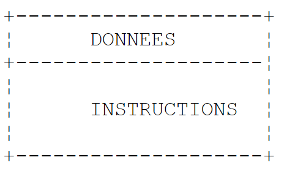
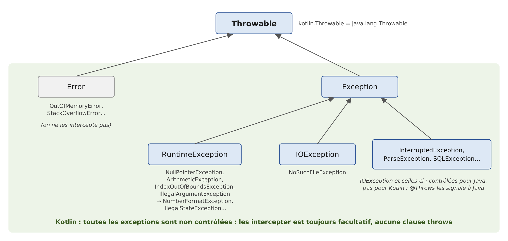

3. The Basics of the Kotlin Language
3.1. Introduction
We’ll start by treating Kotlin as a traditional programming language. We’ll cover classes in the next chapter. A program consists of two things:
- data;
- the instructions that manipulate them.
We generally strive to separate data from instructions:

All the examples in this chapter are part of the Gradle project in the [03-bases] folder of the course code. As noted in Chapter 2, “Setting Up the Development Environment,” each program is contained in a file located within a package named after the program in lowercase: the program [Bases04.kt] is located in the folder [src/main/kotlin/bases04] and begins with the line [package bases04]. You can run it by clicking the green triangle next to IntelliJ IDEA, located in the margin next to the [main] function, or from the command line, from the project folder, using the command [gradlew -q run -Pmain=bases04.Bases04Kt] ([./gradlew] on Linux and macOS). The [-q] (“quiet”) option suppresses Gradle messages: only the program’s output remains. We will explain the name [bases04.Bases04Kt] in the next section. The examples run using French language and formatting conventions (the “locale” fr-FR), just as they would on a French Windows machine. We’ll see that this only affects numbers and dates formatted with a specific format: simply converting a floating-point number to a string always uses a decimal point.
3.2. The Minimal Program
3.2.1. The high-level main function
The program [Bases01.kt] is as follows:
Results:
Comments:
- Line 2: the program's package. A package groups related declarations, just as a folder groups files. The full name of everything declared in this file begins with [bases01.]. In Kotlin, unlike in Java, the file’s directory is not dictated by the package name; however, it is common practice—which we follow—to make them match;
- Line 4: The function [main] is the program’s entry point. The keyword [fun] declares a function; [main()] has no parameters and returns no value. The function is written directly in the file, outside of any class: it is a top-level function. The body of the function is enclosed in curly braces;
- line 5: the function [println] prints a line to the screen. It is also a top-level function, declared in the [kotlin.io] package of the Kotlin standard library;
- line 7: the Java version of the same operation. [System] is a class of JDK, [out] is one of its fields, representing standard output (the screen), and [println] is a method of this object. Kotlin directly uses all Java classes: this is one of its major advantages. The Kotlin function [println] is, in fact, just a shorthand for [System.out.println]; this is the one we will use;
- Line 9: [mots] is a list of strings; lists will be covered in Chapter 5. The keyword [val] declares a variable whose value will not change; we did not specify its type: the compiler infers it from the value, in this case [List<String>]. The function [listOf] belongs to the package [kotlin.collections], which can be used without an import statement (see below);
- Line 10: A list is displayed with its elements enclosed in square brackets;
- statements do not end with a semicolon: a line break is sufficient. The semicolon is only used to write multiple statements on a single line. Lines beginning with // are comments, which are ignored by the compiler.
With two command-line arguments, which are passed to Gradle via the [--args] option:
The arguments are ignored because the [main()] function has no parameters to receive them. To use them, declare the function as [fun main(args: Array<String>)]: the [args] string array will then contain the command-line arguments. We’ll come back to this in the “Main Program Arguments” section.
3.2.2. The main function and its arguments
The program [Bases02.kt] is as follows:
Results:
Comments:
- Line 4: The [main] function receives command-line arguments in the [args] parameter. In Kotlin, a parameter’s type is written after its name, separated by a colon: [args: Array<String>] reads as “[args], of type array of strings.” This is equivalent to [String[] args] in Java;
- line 6: the number of elements in the array is [args.size] (the Java equivalent of [args.length]). In the string, [${args.size\}] is replaced by the value of the expression enclosed in curly braces: this is a string template, which we will discuss in more detail later;
- Line 7: The function [contentToString] constructs a string using the elements of an array. It replaces the Java method [Arrays.toString] and, like the previous function, does not require any imports.
We haven't written any classes. However, the Java virtual machine (JVM), which runs the program, only recognizes classes. The Kotlin compiler therefore organizes the high-level declarations in a file into a class that it generates itself, named after the file followed by [Kt]: for the file [Bases02.kt] in the package [bases02], this is the class [bases02.Bases02Kt]. This is why the execution command refers to the program as [-Pmain=bases02.Bases02Kt]. You can verify this by compiling the file with the command-line compiler [kotlinc] (Chapter 2), then examining the generated class with the [javap] tool from the JDK package:
- [kotlinc] generated a single intermediate code file (“bytecode”), [Bases02Kt.class], in the package directory;
- the command [kotlinr] (the Kotlin launcher, Chapter 2) executes this class by adding the Kotlin standard library ([kotlin-stdlib.jar]) to the classpath;
- [javap] shows that the generated class is [public final] and that the function [main] has become a method [public static] within it: exactly the method [public static void main(String[] args)] that JVM expects. For JVM, a Kotlin program is just another Java class;
- when launched with the simple command [java], the class fails: the generated code calls on classes from the Kotlin standard library (in this case, [kotlin.jvm.internal.Intrinsics], which, among other things, checks that the parameters are not equal to [null]), which is missing from the classpath. Gradle and IntelliJ IDEA add it automatically; a standalone Kotlin program must include it (option [-include-runtime] of [kotlinc], Chapter 2, or Gradle scripts, see below).
For the program [Bases01.kt], whose function [main] has no parameters, the compiler also generates a method [main(String[])] that simply calls the first one. Gradle places the classes it compiles in the project’s [build/classes/kotlin/main] folder; you can examine them there after a compilation ([gradlew build]):
A comparison with Java 25 is instructive. Java 25 also allows you to write a program without declaring a class (a “compact source file,” with a method named [void main()]): the Java compiler then wraps the file’s contents in an implicit class bearing the file’s name. Kotlin has done the same thing since its first version, with two differences:
- the generated class is named [Bases02Kt] rather than [Bases02], which leaves the name [Bases02] available for a class the programmer might want to write themselves in the same file. The annotation
***[@file:JvmName("NomDeClasse")]***, placed at the top of the file, allows you to choose a different name; - high-level functions are compiled into [static] methods: no object is created to call [main], whereas the [void main()] method in a compact Java file is an instance method. Most importantly, in Kotlin, this syntax is not limited to small programs: top-level functions, variables, and constants are commonly used in all programs, alongside classes.
The function [main] can only take the two forms encountered: [fun main()] and [fun main(args: Array<String>)]. It does not need to be declared public: in Kotlin, everything is public by default.
3.2.3. Default imports
The program [Bases01.kt] uses the functions [println] and [listOf], and the program [Bases02.kt] uses the function [contentToString], without any [import] directive. This is possible because every Kotlin file automatically imports the following packages from the standard library:
This provides the basic types ([Int], [String]... from the [kotlin] package), lists, sets, and dictionaries ([kotlin.collections]), console input and output ([kotlin.io]), intervals ([kotlin.ranges]), string functions ([kotlin.text]), as well as classes from the Java package [java.lang] ([System], [Math], [Thread]...). Any other declarations must be imported at the top of the file, immediately after the line [package]: one directive per class or function ([import java.math.BigDecimal]) or one directive per package ([import java.time.*]). There is no equivalent to the [import module java.base;] directive from Java 25, which a compact Java file automatically receives: A Kotlin program that uses the classes [BigDecimal] or [LocalDate] from JDK must import them. A note on syntax: [import] directives, like other statements, do not end with a semicolon.
3.3. Kotlin Data Types
Kotlin uses the following data types:
- integers, both signed and unsigned;
- real numbers;
- decimal numbers;
- characters and strings;
- Booleans;
- objects.
3.3.1. Predefined data types
Kotlin type | Corresponding Java type | Data represented | Literal suffix | Encoding | Value range |
[Char] | [char] / [Character] | character | 2 bytes | Unicode character (UTF-16), from '\u0000' to '\uFFFF' | |
[Byte] | [byte] / [Byte] | integer | 1 byte | [-2⁷, 2⁷-1] or [-128, 127] | |
[Short] | [short] / [Short] | integer | 2 bytes | [-2¹⁵, 2¹⁵-1] or [-32768, 32767] | |
[Int] | [int] / [Integer] | integer | 4 bytes | [-2³¹, 2³¹-1] or [-2147483648, 2147483647] | |
[Long] | [long] / [Long] | integer | L | 8 bytes | [-2⁶³, 2⁶³-1] or [-9223372036854775808, 9223372036854775807] |
[UByte], [UShort], [UInt], [ULong] | (no equivalent) | unsigned integer | U, UL | 1, 2, 4, 8 bytes | [0, 2⁸-1], [0, 2¹⁶-1], [0, 2³²-1], [0, 2⁶⁴-1] |
[Float] | [float] / [Float] | actual number | F | 4 bytes | [1,4 10⁻⁴⁵, 3,4 10³⁸] in absolute value, 7 significant digits |
[Double] | [double] / [Double] | actual number | 8 bytes | [4,9 10⁻³²⁴, 1,8 10³⁰⁸] in absolute value, 15 to 16 significant digits | |
[Boolean] | [boolean] / [Boolean] | Boolean | not defined | [true], [false] | |
[String] | [String] | character string | reference to a Unicode character sequence | ||
[BigDecimal] (Java class) | [BigDecimal] | decimal number | variable | exact decimal number, of any precision | |
[Any] | [Object] | object reference | reference to an object of any type |
Java distinguishes between the eight primitive types ([int], [double]...), whose values are not objects, and reference types (classes), and it associates each primitive type with a wrapper class ([Integer] for [int]...). Kotlin removes this distinction: in Kotlin, every value is an object. The type [Int] is a class that has methods; you can write [3.plus(4)] or [3.toString()], which Java does not allow for the literal 3 of type [int]. Type names all begin with a capital letter, just like class names.
This has no impact on runtime performance. The compiler translates a variable of type [Int] into a variable of the primitive type [int] or JVM whenever possible, and uses the wrapper class *[java.lang.Integer] only when an object is required: when the value is passed to a parameter of type [Any] (the Kotlin equivalent of Java’s [Object] class), stored in a list, or when it can be of type [null] (see below). Boxing and unboxing are therefore still present, but this is handled by the compiler, and the Kotlin programmer does not need to worry about it. There is no [Integer] type in Kotlin: there is only [Int]*.
The sizes in bytes are given by the constants [Int.SIZE_BYTES], [Long.SIZE_BYTES]... (and [Int.SIZE_BITS]... in bits), the range bounds by [Int.MIN_VALUE] and [Int.MAX_VALUE], etc.
Unlike Java, Kotlin has unsigned integers: [UByte], [UShort], [UInt], and [ULong], which are the same size as their signed counterparts but represent only positive or zero values. Their literals are suffixed with U ([42U]) or UL ([42UL]). They are primarily used to manipulate binary data (file bytes, addresses, colors); common calculations are performed using signed types. Kotlin also lacks a decimal type: amounts are calculated using the [BigDecimal] class from the Java package [java.math], which we’ll discuss a bit later.
The program [Bases03.kt] illustrates these various points:
Results:
Comments:
- Line 4: The class [BigDecimal] is a subclass of JDK; it must be imported;
- line 7: declaration of a variable [ent] of type [Int] initialized to 2. In Kotlin, a variable’s type is written after its name, separated by a colon. We’ll see that the type can usually be omitted;
- line 8: the suffix F is required: the literal 10.5 is of type [Double], and the compiler refuses to assign it to a variable of type [Float];
- line 11: the literal 1000 is accepted for a variable of type [Long], because the compiler knows that it is a constant that fits within the type. The same applies to lines 12–13 for the types [Byte] and [Short]. However, as we will see, Kotlin never implicitly converts a variable from one numeric type to another;
- line 16: a [BigDecimal] number is an object; here, it is created from a string, which guarantees an exact value. Kotlin does not have a [new] operator: an object is created by calling its class constructor as a function;
- line 18: In a string, [$ent] is replaced by the value of the variable [ent], and [${nomType(ent)\}] by the value of the expression written between the curly braces. These string templates are the standard way to construct a string in Kotlin; we’ll return to this in the next section. [Int.SIZE_BYTES] is the size in bytes of a [Int];
- Line 18: The function [nomType] (lines 42–43) expects a parameter of type [Any]. The parameter is therefore an object, and the value [ent] is wrapped in a [java.lang.Integer] object. The function displays two names: [o::class.qualifiedName] is the full type name for Kotlin ([kotlin.Int]), and [o.javaClass.name] is the name of the object’s class for JVM ([java.lang.Integer]). We can see that [kotlin.Int], [kotlin.Double], [kotlin.String]... are represented at runtime by Java classes;
- line 21: the size of a string in memory is not accessible: [String] does not have a constant [SIZE_BYTES];
- line 26: the size of a boolean is not defined by JVM: [Boolean] does not have a constant [SIZE_BYTES];
- line 27: [BigDecimal] is a Java class: its two names are identical;
- line 29: the literal 3 is an object of type [Int]: [3::class.simpleName] is the short name of its type, and its methods can be called [plus] and [toString]. We will see in Chapter 4 that the + operator is simply another way of writing the method [plus];
- lines 31–33: the constants [MIN_VALUE] and [MAX_VALUE] specify the bounds of the value domain. Note: For real numbers, [Double.MIN_VALUE] is the smallest strictly positive value (4.9 × 10⁻³²⁴) and not the largest negative number, which is [-Double.MAX_VALUE];
- line 35: a 32-bit unsigned integer. The value 4,000,000,000 exceeds the range of [Int], but not that of [UInt], which extends up to 2³²-1;
- lines 37–38: -1 is encoded as 32 bits set to 1; the [toUInt] function interprets them as an unsigned integer, which is equal to 2³²-1;
- Lines 42–43: A high-level function from the file. The return type is specified after the list of parameters: [: String]. It returns ([return]), a character string. Functions are described in the section “Passing Parameters to a Function.”
Note that real numbers are displayed with a decimal point (10.5, -4.6), even though the program runs in French. Converting a number to a string—whether using a template, concatenation, or the [toString] method—does not depend on the user’s language: it always produces a decimal point. Only numeric formats such as %f, which we will discuss later, follow the conventions of the language.
3.3.2. Notation for Literal Data
Data | Examples of literals |
[Int] integer (32 bits) | 145, -7, 0xFF (hexadecimal), 0b1010_1010 (binary) |
Integer [Long] (64 bits), suffix L | 100000L, 1_000_000_000_000L, 3_000_000_000 (too large for a [Int]) |
unsigned integer [UInt], [ULong], suffix U, UL | 255U, 0xFFFF_FFFFU, 1UL |
real [Double] | 134.789, -45E-18 (-45 × 10⁻¹⁸), 10.0 |
real [Float], suffix F or f | 134.789F, -45E-18F |
decimal number [BigDecimal] | no literal: [BigDecimal("100000.50")] |
character [Char] | 'A', 'b', '\n', '\u00e9' |
string [String] | "today", "c:\\chap1", "$nom is ${age + 10\} years old", raw string """c:\chap1""" |
boolean [Boolean] | [true], [false] |
date | [LocalDate.of(1954, 10, 13)] (year, month, day) for 10/13/1954 |
In the source code, floating-point numbers are always written with a decimal point. As in Java, integers can be written in hexadecimal (prefix [0x]) or binary (prefix [0b]), and groups of digits can be separated by the _ character to improve readability: [1_000_000] is the integer one million. Kotlin differs from Java in a few ways, which eliminate just as many pitfalls:
- an integer literal without a suffix is of type [Int] if it fits within that type, and of type [Long] otherwise: [3_000_000_000] is a [Long]. Java rejects this literal without the suffix L;
- the suffix L must be written in uppercase: the compiler rejects [100l] with the message [use 'L' instead of 'l'], because l looks too much like the digit 1;
- there is no octal notation. The Java pitfall, where 017 equals 15, does not exist: the compiler rejects 017 with the message [leading zeros are not allowed in integer literals];
- there is no “D” suffix for floating-point numbers: a literal containing a decimal point or an exponent is [Double]; 10.0 is therefore written as 10.0 and not 10D;
- Unsigned integers have their own suffixes, U and UL.
A string literal may contain escape sequences introduced by the \ character: "\n" represents the end-of-line character and not the sequence of the two characters \ and n, "\t" represents a tab, "\"" represents a double quote, "\\" the \ character itself, "\$" the $ character (see below), and "\u00e9" the Unicode character with hexadecimal code 00E9. To write the Windows path c:\chap1\paragraph3, you must therefore write "c:\\chap1\\paragraph3". Java file classes also accept the / separator on Windows: "c:/chap1/paragraph3" refers to the same file.
To construct a string from multiple values, Kotlin offers three methods:
- string templates: In a string, [$nom] is replaced by the value of the variable [nom], and [${expression\}] by the value of any expression: ["dans 10 ans il aura ${age + 10\} ans"]. This is the most readable and most widely used method. It is equivalent to C#’s interpolated strings, such as [$"..."]; Java, on the other hand, does not have this feature (the “string templates” proposed as a preview in Java 21 and 22 have been removed);
- Concatenation using the + operator: if the left operand is a string, the right operand is converted to a string, regardless of its type. Unlike in Java, the left operand must be a string: [10 + " ans"] is rejected by the compiler because the type [Int] does not have a + operator that accepts a string;
- the formats: ["format".format(valeur1, valeur2, ...)] or [String.format(format, valeur1, valeur2, ...)]. These are the Java formats, with the same specifiers, replaced in order by the following values: %s (any value converted to a string), %d (an integer), %f (a floating-point number), %.2f (a floating-point number with two decimal places), %x or %X (an integer in hexadecimal), %,d (an integer with a thousands separator), %e (scientific notation), %n (a line break), %10s (a string right-aligned to 10 characters), %-10s (left-aligned)... Numeric formats follow the conventions of the user’s language. They are used when you need to control the presentation of numbers (number of decimal places, alignment); otherwise, the template is sufficient.
Finally, Kotlin offers “raw strings”: a string delimited by three quotation marks, such as ["""..."""], can span multiple lines and contain quotation marks; most importantly, escape sequences are not interpreted in raw strings: the \ character is treated as-is, so you would write ["""c:\chap1"""]. This is very useful for writing JSON, SQL, HTML, or regular expressions (Chapter 5). Raw strings support templates. Leading spaces are preserved as-is; to indent the text with the code, apply the function [trimIndent()] to the string, which removes the spaces common to all lines as well as the first and last lines if they are empty, or the function [trimMargin()], which removes everything preceding the | character (the “margin”). Java 15 text blocks were designed based on this model; they automatically remove common indentation but interpret escape sequences.
The program [Bases04.kt] demonstrates these different notations:
Results:
Comments:
- lines 4–6: the classes from JDK used by the program are imported;
- Line 10: Four declarations on a single line, separated by semicolons. [0xFF] is 255 and [0b1010_1010] is 170. The variable types are not specified: the compiler infers them from the values, in this case [Int];
- line 11: the suffix L turns 100000 into a [Long]. The literal 3_000_000_000, which is too large for a [Int], is a [Long] without the need for a suffix;
- line 14: two unsigned integers of type [UInt]. 0xFFFF_FFFFU, which has all 32 bits set to 1, is equal to 2³²-1;
- line 17: -45E-18 is displayed as -4.5E-17: this is the same value, normalized. The floating-point number 10.0 is displayed as 10.0: converting a [Double] to a string always produces at least one decimal place;
- line 19: a [BigDecimal] retains the number of decimal places with which it was written: 100000.50, not 100000.5;
- line 22: the sequence \u00e9 denotes the Unicode character with hexadecimal code 00E9, i.e., é;
- line 26: a date. The class [LocalDate] (package [java.time] of JDK) represents a date without a time. Kotlin does not have its own date class: it uses Java’s. Its conversion to a string uses the international format ISO 8601 (year-month-day), regardless of the language. We’ll cover dates in Chapter 5;
- line 30: each \\ represents a single \ character;
- line 32: a line break and a tab;
- line 34: the sequences \$ and \";
- line 39: a template. [$nom] and [$age] are replaced by the values of the variables, and [${age + 10\}] by the value of the expression. Curly braces are required whenever what follows the $ is not a simple variable name;
- line 40: the same text constructed by concatenation. The parentheses around [(age + 10)] are essential: without them, the + operators would be evaluated from left to right, the string would first receive 23 and then 10, and the result would be “he will be 2310 years old.” The template does not have this pitfall;
- line 41: the same text constructed using a format;
- line 43: a few format specifiers: %.1f (one decimal place), %X (hexadecimal in uppercase), %,d (thousands separator). These formats follow French conventions: a decimal point and, as the thousands separator, a thin non-breaking space. The [format] function from the Kotlin library is applied to the format string itself; it calls the Java function [String.format];
- line 44: the function [toString(base)] converts an integer to a string in any base, here 2; the function [uppercase()] converts the string to uppercase. Note that a template can contain function calls;
- line 45: a custom date format: day of the week (EEEE), day (d), month in words (MMMM), year (yyyy). The names of the days and months are in French, the user’s language. Note that the template can contain quotation marks inside curly braces;
- Lines 48–53: a raw string spanning multiple lines. The quotation marks are written as-is, and \chap1 did not need to be written as \\chap1. The [trimIndent()] function removed the eight spaces common to all lines, as well as the first line (which is empty, immediately after the opening quotation marks) and the last line (which contains only spaces before the closing quotation marks);
- line 56: a raw string on a single line, which avoids having to escape the quotation marks in JSON, with two templates;
- lines 59–62: the [trimMargin()] function removes spaces from each line, and the character | qui marquent la marge : les trois espaces placés après le | is retained. Since escape sequences are not interpreted in a raw string, the $ character is written as [${'$'\}]: a template whose expression is the '$' character. Here, since the $ is followed by a newline, it could have been written on its own; however, [$nom] would be replaced by the value of [nom]. Since Kotlin 2.2, you can also prefix the string with multiple $ signs: in [$$"""{ "$schema": "$$nom" \}"""], two $ signs are required to introduce a template, and [$schema] remains unchanged.
3.3.3. Data Declaration
3.3.3.1. Role of Declarations
A program manipulates data characterized by a name and a type. This data is stored in memory. When the program is compiled, the compiler assigns each piece of data a memory location characterized by an address and a size. It does this based on the declarations made by the programmer. Furthermore, these declarations allow the compiler to detect programming errors. Thus, the operation [x = x * 2] will be declared invalid if [x] is a character string.
3.3.3.2. Read-Only and Mutable Variables
Kotlin has two keywords for declaring a variable:
- [val] (“value”) declares a read-only variable: it is assigned a value only once and cannot be changed afterward. This is equivalent to a Java variable [final];
- [var] (“variable”) declares a mutable variable, which can be assigned new values.
The syntax is as follows:
The type is usually omitted: the compiler then infers it from the value (type inference). The Kotlin keyword [var] therefore does not have the same meaning as in Java 10: in Java, [var] means “inferred type”; in Kotlin, it means “mutable,” and the type can be inferred with [val] just as with [var]. A variable declared without being initialized must have an explicit type; it cannot be used until it has been assigned a value (message [variable 'b' must be initialized]).
The convention in Kotlin is to declare all variables using [val], and to use [var] only when the variable’s value is actually expected to change. This improves the program’s readability: when reading ***[val total = ...]***, you know that *[total] will retain that value. IntelliJ and IDEA also help identify any variable named [var] that might actually be [val]*.
Kotlin distinguishes between uppercase and lowercase letters: the variables [FIN] and [fin] are different. By convention, a variable name begins with a lowercase letter, and each subsequent word begins with an uppercase letter: [prixHt], [nbEnfants].
3.3.3.3. Declaring Constants
A variable such as [val] does not change its value, but its value may not be known until runtime ([val aujourdhui = LocalDateTime.now()]). A constant, strictly speaking, is a value known at compile time. Kotlin declares it using the keywords [const val]:
A constant [const val] is declared at the top level of the file (outside of functions), or within a [object] or a [companion object], which we will cover in Chapter 4. It can only be of a basic type ([Int], [Double], [Boolean]...) or of type [String], and its value must be computable by the compiler. For example:
The compiler then replaces every occurrence of [TAUX_TVA] with its value, just as the Java compiler does for a [static final] field initialized with a constant. The following attempts are rejected:
(the exclamation point in [LocalDate!] will be explained in the next section). Why declare constants?
- The program is easier to read if the constant is given a meaningful name;
- it is easier to modify the program if the “constant” needs to be changed. Thus, if the rate of TVA changes to 0.25, the only modification needed is to the statement that defines its value: [const val TAUX_TVA = 0.25]. If 0.2 had been used explicitly in the program, numerous statements would need to be modified.
By convention, as in Java, a constant’s name is written in uppercase letters, with words separated by the _ character: [TAUX_TVA], [MAX_VALUE]. A local variable, such as [val], retains a regular name.
The program [Bases05.kt] is as follows:
Results:
Comments:
- line 7: a top-level constant. The compiler classifies it in the [Bases05Kt] class as a [public static final double] field;
- line 11: a read-only local variable, of type [String] (inferred);
- line 13: a mutable variable. The literal 100.0 gives [prixHt] the type [Double]. With [var prixHt = 100], the variable would be of type [Int], and the assignment of 250.0 on line 15 would be rejected;
- line 14: the result is a [Double], displayed with at least one decimal place: 120.0;
- line 15: [prixHt] is assigned a new value;
- line 19: an explicitly typed data value;
- line 20: the function [nomType] (line 41) displays the short name ([simpleName]) and the full name ([qualifiedName]) of its parameter’s type;
- line 22: an implicitly typed value. Because 3 is of type [Int], [j] will be of type [Int];
- line 24: Because [LocalDateTime.now()] (the current date and time) is of type [LocalDateTime], [aujourdhui] will be of type [LocalDateTime]. Note that the program calls a [static] method of a Java class, just as in Java: [LocalDateTime.now()];
- lines 26–29: the inferred type depends on how the literal is written: 3.5 is a [Double], 3.5F is a [Float], 10L is a [Long];
- Line 33: a variable declared without an initial value; its type is required. Although it is declared as [val], it can be assigned a value later (line 36), but only once. Kotlin does not allow declaring multiple variables in a single statement, as in Java’s [int a = 1, b, c = 3;]: you write one declaration per line, or multiple declarations separated by semicolons, as in the previous program;
- Line 41: A function whose body is reduced to a single expression can be written using the equals sign (=) instead of curly braces and the expression body. You could even omit the return type, which the compiler would infer from the expression.
A variable [val] cannot be assigned a new value, and a variable [var] cannot change its type: its type was fixed by its declaration. Thus, the following statements are rejected by the compiler:
3.3.4. Null Safety
It is sometimes useful to be able to express the absence of a value: an unknown age, an empty field in a database, or an unsuccessful search. In Java, any variable of a reference type can have the value [null], which means “no object.” Attempting to access a member of such a variable—for example, its method [length()]—causes a runtime error, a [NullPointerException]: This is the most common error in Java, because the Java compiler does not distinguish between a reference that can be [null] and one that cannot. To express the absence of a value without [null], Java 8 added the [Optional<T>] class, a “box” that either contains a value or is empty; and for a number, Java uses the wrapper class [Integer], which can hold [null], instead of the primitive type [int].
Kotlin resolves this issue within the type system itself, and this is one of its major contributions. A regular type does not allow the null value: a variable of type [String] always contains a string, and a variable of type [Int] always contains an integer. To allow [null], you must explicitly indicate this by appending a question mark to the type name: [String?] is the “string or null” type, and [Int?] is the “integer or null” type. These are known as “nullable types.” The compiler then verifies that a member of a nullable value cannot be used without first handling the case [null]:
Kotlin offers several ways to use a nullable value:
- the [if (x != null)] test: in the branch where the test is true, the compiler knows that [x] is not equal to [null], and treats it as a value of type [String] (and not [String?]). This is known as a “smart cast”;
- the safe call [x?.length]: if [x] is equal to [null], the expression evaluates to [null] instead of causing an error; otherwise, it evaluates to [x.length]. The result is therefore of type [Int?];
- the Elvis operator [x ?: valeurParDefaut]: it evaluates to [x] if [x] is not equal to [null], and to [valeurParDefaut] otherwise (its name comes from the resemblance of the “?” symbol to the singer’s hairstyle, viewed from the side). It is often combined with the safe call: [x?.length ?: 0];
- the
**let**function:***[x?.let { ... \\}]executes the block between curly braces only if*[x]is not equal to*[null]*; within the block, the value is called [it] and is of a non-nullable type. The block is a lambda**, a concept we will study in Chapter 7; - the assertion [x!!]: the programmer asserts that [x] is not equal to [null]. If this is true, [x!!] is of type [String]; otherwise, a [NullPointerException] is thrown. It should be used as little as possible: it is a deliberate return to Java’s behavior.
The ?, ?:, and !! operators are discussed in more detail in the “Null Operators” section. C# has adopted a similar approach with its “nullable reference types” (C# 8), in the form of warnings; in Kotlin, these are compilation errors.
In practice, the [NullPointerException] error is rare in Kotlin. It can now only occur in a few cases: the use of !!, an explicitly thrown exception, and, most importantly, the use of Java code. The Kotlin compiler does not know whether a Java method might return [null]: it therefore assigns it a “platform type,” denoted as [String!] in compiler messages (it cannot be written in the code), which can be used as a [String] or as a [String?]. The responsibility then falls on the programmer. When a Java method is known to return [null], its result is stored in a nullable variable ([val chemin: String? = System.getenv("X")]): the compiler then resumes its checks. (Java methods annotated as [@Nullable] or [@NonNull]—for example, with annotations from the JSpecify project—are assigned a specific Kotlin type, not a platform type.)
What happens to the wrapper classes and [Optional]? A [Int] is compiled into [int], and a [Int?] into [java.lang.Integer], since only a reference can be of type [null]: The wrapper classes are there, but the compiler handles them on its own. The [Optional] class remains usable, since it is a Java class, but it is of little use in Kotlin: a [String?] says the same thing as a [Optional<String>], without creating an additional object, and the operators ?. and ?: replace its methods [map] and [orElse]. Functions in the Kotlin library that may return nothing return [null]: [toIntOrNull()], [firstOrNull()], [readlnOrNull()]...
We’ll encounter nullable types right from the first examples, because the function [readlnOrNull()], which reads a line typed on the keyboard, returns [null] when there is nothing left to read (end of the input stream). The program [Bases06.kt] is as follows:
Results when entering text via the keyboard:
Results when the user presses Ctrl-D (Ctrl-Z followed by Enter on Windows), which closes the input stream:
Comments:
- Line 5: a function that returns a first name, such as [null]. The type of its result, [String?], informs users of this. The expression [if (...) "jean" else null] is a [if] that returns a value; we’ll come back to this;
- lines 9–10: two variables of type [String?]. [prenom2] is equal to [null]. The type could have been omitted: it would have been inferred from the type of the result of [prenomDe];
- line 11: a template displays [null] for a null value; the value [null] is tested using the == operator;
- lines 13–14: within the [if] block, [prenom1] is of type [String]: its property [length] (the length of the string) can be used safely. Outside the block, [prenom1.length] would be rejected;
- line 17: the safe call. [prenom2?.length] is equal to [null];
- line 19: the Elvis operator. [prenom2 ?: "inconnu"] is "unknown," and [prenom2?.length ?: 0] is 0;
- lines 21–22: the function [let]. The first block is executed with [it] set to "jean"; the second is not;
- lines 25–26: The function [toIntOrNull()] converts a string to an integer and returns [null] if the string does not represent an integer. The type [Int?] is compiled to [java.lang.Integer];
- Line 27: You cannot perform calculations with a [Int?]; [ageInconnu + 1] would be rejected. The Elvis operator returns a [Int]: 0 if [ageInconnu] is equal to [null]. Unboxing a null [Integer]—a classic Java pitfall—is thus impossible;
- line 30: the !! assertion applied to a non-null value: it returns the value, of type [String];
- lines 31–34: the
!!assertion applied to*[null]throws a*[NullPointerException]. The structure[try / catch]*, which catches the error, is described later; here, the full class name of the exception is displayed.[NullPointerException]* is a Java class, which Kotlin refers to by the same name; - line 38: the Java method [System.getenv] returns the value of a system environment variable, or [null] if it does not exist. Its result is of the platform type [String!]: [chemin] is therefore of this type;
- line 39: when used as a [String?], [chemin] behaves correctly;
- line 42: when used as a [String], it is accepted by the compiler but causes a [NullPointerException] at runtime. The exception message (property [message]), generated by JVM, specifies exactly which expression was [null]. If we had written [val chemin: String? = System.getenv(...)], the compiler would have rejected that line;
- line 48: the function [print] writes to the screen without moving to the next line; user input will follow the message;
- line 49: the function [readlnOrNull()] reads the line typed on the keyboard. It returns a value of type [String?]: [null] if the input stream is closed;
- line 50: the value [null] is checked;
- line 54: in the branch [else], [ligne] is of type [String]: [ligne.length] can be used safely.
3.3.5. Conversions Between Numbers and Strings
Conversion | Function |
number -> string | [nombre.toString()], a template such as ["$nombre"], ["" + nombre], or a format such as ["%d".format(nombre)] |
string -> int | [chaine.toInt()], [chaine.toIntOrNull()] |
string -> Long | [chaine.toLong()], [chaine.toLongOrNull()] |
string -> Double | [chaine.toDouble()], [chaine.toDoubleOrNull()] |
string -> Float | [chaine.toFloat()], [chaine.toFloatOrNull()] |
string -> BigDecimal | [chaine.toBigDecimal()], [chaine.toBigDecimalOrNull()] |
string -> Boolean | [chaine.toBoolean()], [chaine.toBooleanStrictOrNull()] |
These conversion functions are part of the Kotlin library (package [kotlin.text]) and are called directly on the string itself: ["10".toInt()] rather than the Java function [Integer.parseInt("10")], which remains usable. These are extension functions: functions written outside the [String] class, but called just like its methods. We’ll learn how to write them in Chapter 4.
Converting a string to a number may fail if the string does not represent a valid number. A function like [toInt()] then generates an error called an exception—in this case, of type [NumberFormatException]—which terminates the program if it is not handled. This error can be handled by the following [try / catch] clause:
If the function does not throw an exception, execution proceeds to the next statement; otherwise, it proceeds to the body of the [catch] clause, then to the next statement. We will revisit exception handling in the section dedicated to it.
Kotlin also provides, for each conversion, a version that does not throw an exception: [toIntOrNull()], [toDoubleOrNull()]... return [null] if the conversion fails. Their return values are nullable ([Int?], [Double?]...): the compiler therefore requires that the failure be handled. When combined with the Elvis operator, they allow you to write a conversion with a default value in a single line: [saisie.toIntOrNull() ?: 0]. Java has no equivalent; the Java course wrote its own method, which returned a [OptionalInt].
These functions accept a leading + or - sign, but no spaces or thousand separators: use the function [trim()] to remove leading and trailing spaces from an input before converting it.
The program [Bases07.kt] demonstrates several techniques for converting between numbers and strings. The function [affiche] displays the value of its parameter on the screen:
Results:
Comments:
- lines 9–12: the data to be converted;
- lines 15–18: four ways to convert a number to a string. The third uses a template, and the last concatenates an empty string with the number. The template is the most common method in Kotlin;
- line 22: a boolean is displayed as [true] or [false];
- lines 25–31: We handle the exception that [toInt()] may throw. The variable [i1] is declared alongside [var] because it receives a new value in [try]. [e.message] is the error message associated with the [e] exception (the Java method [getMessage()], viewed in Kotlin as a property). These are the messages from the Java methods called by the Kotlin functions: they are in English;
- line 45: [toDouble()] always expects a decimal point, regardless of the user’s language: the string "100.87" is interpreted the same way on all machines. This is the correct way to read numbers from files or in program-to-program exchanges;
- line 58: Consequently, the decimal comma is rejected;
- line 65: converting a string to [BigDecimal]; this also expects a decimal point. It is equivalent to [BigDecimal("100.87")];
- line 69: [toBoolean()] returns [true] for the string "true" (case-insensitive) and [false] for any other string, including "yes". [toBooleanStrictOrNull()] accepts only “true” and “false,” and returns [null] for everything else;
- Lines 72–78: Conversions without exception. [i2] and [i3] are of the same type as [Int?]; After the [i2 != null] test, [i2] can be used as a [Int]. In a string, a quotation mark is written as \";
- line 80: a conversion with a default value, using the Elvis operator. The template contains a string, "12x", which is itself enclosed in quotation marks: this is allowed inside curly braces;
- line 82: " 42 " is not converted; after [trim()], it is converted;
- line 85: [Locale.getDefault()] returns the program’s locale—that is, the user’s language and country, derived from the system settings: here, fr-FR;
- line 86: a format uses the current locale: the real number is written with a decimal comma;
- line 87: the function [format] accepts a locale as its first parameter. [Locale.ROOT] is a neutral locale that uses a period as the decimal separator, regardless of the machine. It is used to write formatted numbers to files or in inter-program exchanges, which must not depend on the user’s language;
- line 90: To read a number written according to French conventions, use a [NumberFormat] object (from the [java.text] package of JDK) obtained for the [Locale.FRANCE] locale. Its method [parse] returns a [Number] object and may throw a [ParseException] exception. In Java, this is a checked exception: the compiler requires that it be handled. Kotlin does not have checked exceptions: the compiler leaves it up to the programmer to decide whether or not to handle the exception. We’ll come back to this in the section on exceptions;
- line 91: [toDouble()] converts [Number] to [Double];
- Lines 95–96: a high-level function. Functions can be written in any order, before or after [main]. It does not return a result: the return type is omitted (it is actually of type [Unit], the equivalent of Java’s [void]).
Note that the functions [toInt()], [toDouble()]... and [toString()] ignore the user’s language (decimal point), whereas the formats and the [NumberFormat] class respect it. A program that reads numbers must always know which conventions were used to write them.
3.3.6. Data Arrays
A Kotlin array is an object that allows data of the same type to be grouped under a single identifier. Kotlin distinguishes between two types of arrays:
- the generic type [Array<T>], an array of elements of type [T]: [Array<String>] is an array of strings. It corresponds to Java’s array of [T[]] objects ([String[]]);
- specialized types for basic types: [IntArray], [LongArray], [DoubleArray], [BooleanArray], [CharArray]... A [IntArray] corresponds to the Java array [int[]]: its elements are primitive values, arranged side by side in memory. One could write [Array<Int>], but that would be an array of [Integer] ([Integer[]]) objects, which is bulkier and slower: for numbers, specialized arrays are preferred.
There are several ways to create an array:
Kotlin does not have a [new] operator or [{0, 10, 20\}] syntax for creating an array: everything is done using functions ([arrayOf], [intArrayOf]...) or constructors ([IntArray(n)], [Array(n) { ... \}]). A [IntArray(n)] contains n zeros, while a [BooleanArray(n)] contains n values of [false]. However, there is no [Array<String>(n)] whose elements would be [null]: this would violate null safety, since the elements are of type [String]. You must either specify the value of each element or explicitly request an array of nullable elements using [arrayOfNulls<String>(n)], of type [Array<String?>].
The number of elements in an array is its property [size] (the Java field [length]). The syntax [tableau[i]] refers to data item number i, where i belongs to the interval [0, size-1]. Any reference to data [tableau[i]] where i is not in this range causes a [ArrayIndexOutOfBoundsException] exception. The property [indices] is the range of valid indices (from 0 to size-1), and [lastIndex] is the last index (size-1). An array cannot change size after it is created: for a growing collection, a list is used (Chapter 5). A variable [val] that refers to an array cannot refer to another array, but the elements of the array remain modifiable.
Kotlin also does not have true two-dimensional arrays: an array with two indices is an array of arrays, for example, a [Array<DoubleArray>]. The syntax [tableau[i][j]] refers to element j in row i. [tableau.size] is the number of rows, and [tableau[i].size] is the number of elements in row i. Since each row is an independent array, the rows can have different lengths (this is referred to as a “staircase array”).
The Kotlin library offers a wide range of array functions that replace the methods of the [java.util.Arrays] class and go far beyond them: [contentToString()], [contentDeepToString()], [contentEquals()], [first()], [last()], [getOrNull(i)], [copyOf()], [copyOfRange(debut, fin)], [sliceArray(intervalle)], [sort()], [sorted()], [fill()], [sum()], [max()], [average()], [contains()] (written using the operator [in])... For the most part, these are the same as those in the lists, which we will examine in Chapter 5.
The program [Bases08.kt] combines these different tables:
Results:
Comments:
- line 6: an initialized array of integers, of type [IntArray];
- line 7: a loop of type [for] iterates through the array indices, from 0 to [entiers.lastIndex]. The loop of type [for] is presented later;
- Line 8: In a template, [$i] is the index value and [${entiers[i]\}] is the element value. Curly braces are required for the expression [entiers[i]]; the square bracket that follows [[$i] does not require them, since it cannot be part of a variable name;
- line 12: a two-dimensional array (2 rows, 2 columns) of type [Array<DoubleArray>]. You must write -6.0 and not -6: the function [doubleArrayOf] expects [Double], and Kotlin does not convert the integer -6 to a floating-point number (Java does);
- lines 13–14: [reels.indices] iterates over the rows, [reels[i].indices] iterates over the columns of row i;
- line 18: [contentDeepToString()] displays an array of arrays;
- line 22: a 3-row staircase array. The constructor [Array(3) { i -> ... \}] creates an array of 3 elements and calculates the value of each by executing the block between curly braces with the element’s index [i]. Each element here is itself an array of strings ([i + 1]), whose element with index [j] is "name" followed by i and j. The block between curly braces is a lambda (Chapter 7); for now, it’s enough to read it as “for index i, the value is...”. In Java, it took three steps: create the array of rows, create each row, then populate the elements;
- line 30: an array of 3 booleans, all of which are [false];
- line 31: an array of 2 nullable strings, all of which are [null];
- line 36: the function [contentToString()] constructs a string from the array’s elements. Displaying the array directly ([println(valeurs)]) would result, as in Java, in text like [I@6328d34a (the array type and a numeric code), rather than its contents;
- lines 38–39: the first, last, and second-to-last elements. The functions [first()] and [last()] replace the expressions [valeurs[0]] and [valeurs[valeurs.size - 1]]. Kotlin does not have an index counted from the end of the array (the C# equivalent of [^1]);
- line 41: the elements at indices 1 and 2. As with [Arrays.copyOfRange] in Java, the end boundary is excluded;
- line 44: the elements at indices 2 through [lastIndex]. [2..valeurs.lastIndex] is a range: the set of integers from 2 to 4, inclusive. The function [sliceArray] returns a new array consisting of the elements whose indices belong to the range. Ranges are introduced with the loop [for];
- lines 47–48: [copyOfRange] creates a copy; modifying [extrait] does not modify [valeurs];
- line 50: the sum, maximum, and average of the elements. The average is a [Double];
- line 51: the operator [in] checks whether a value is present in the array;
- line 54: an array of objects, of type [Array<String>];
- line 55: [amis.getOrNull(5)] returns [null] instead of throwing an exception when the index is out of bounds;
- lines 58–60: index 3 does not exist: a [ArrayIndexOutOfBoundsException] is thrown, with a message indicating the incorrect index and the array size.
3.4. Kotlin’s basic statements
There are two types:
- elementary instructions executed by the computer;
- instructions that control the flow of the program.
Basic instructions become clear when considering the structure of a microcomputer and its peripherals:

- 1: reading information from the keyboard;
- 2: processing information;
- 3: writing information to the screen.
3.4.1. Writing to the Screen
There are various instructions for writing to the screen:
where [expression] is any data that can be converted to a character string for display on the screen. All objects have a method [toString()] that is used to perform this conversion. The function [println] writes the value and then moves to the next line; the function [print] does the same thing without moving to the next line; [println()], without any parameters, simply moves to the next line. For formatted output, use [println("format".format(valeur1, ...))], or use the Java method [System.out.printf(format, valeur1, ...)].
The Kotlin functions [println] and [print] (in the [kotlin.io] package) write to the Java stream [System.out]. The [System] class provides access to two write streams via its static fields [out] and [err], which are of type [PrintStream]:
- [System.out.println()] writes to the stream [out], the standard output, which is usually associated with the screen;
- [System.err.println()] writes to the [err] stream, the error output, which is also usually associated with the screen.
The Kotlin library does not have a function to write to the error output: [System.err.println] is used directly. The streams [out] and [err] can be redirected to files at runtime, as we’ll see shortly.
3.4.2. Reading Data Entered from the Keyboard
The data stream from the keyboard is represented by the Java field [System.in], which is of type [InputStream]. This is a byte stream, which is not very convenient to use directly. The Kotlin library provides two functions that read a line of text from this stream:
The line typed on the keyboard, without the line-end character, is stored in the variable *[ligne]* and can then be processed by the program. The two functions differ only in their behavior at the end of the input stream (when the user presses Ctrl-D, or Ctrl-Z followed by Enter on Windows, or when the file redirected to the input stream is exhausted):
- [readln()] then throws a [ReadAfterEOFException] exception; it therefore always returns a string of type [String];
- [readlnOrNull()] then returns [null]; its result is of type [String?], which requires handling this case, as the program [Bases06.kt] did.
These functions do not display a prompt: this is specified beforehand using [print]. In older programs, you may also encounter the function [readLine()], which behaves like [readlnOrNull()], as well as the Java classes [BufferedReader] and [Scanner], which are still usable. The [System.in] stream can be redirected to a file, just like the [out] and [err] streams. Finally, note the Java class [Console], derived from [System.console()], whose method [readPassword] reads a password without displaying it.
3.4.3. Example of Input/Output
The program [Bases09.kt] illustrates keyboard and screen input/output operations:
Results:
Comments:
- Line 6: [obj] is a reference to an object of class [Any], the root class of all Kotlin classes ([Object] in Java). The object is created by calling the [Any()] constructor, without [new];
- Line 7: [obj] is printed to the screen. The [obj.toString()] method is called to retrieve the text to be displayed;
- line 11: [err] is written to the stream;
- line 12: the same thing, but with a format. The first parameter, "i=%d%n," is the display format; the other parameters are the values to be displayed: %d is replaced by the value of [i], and %n by the system's line-end character (\r\n on Windows, \n on Linux, and macOS);
- line 15: a prompt is displayed without moving to the next line;
- line 16: reads the line typed on the keyboard. [ligne] is of type [String].
In the results:
- line 2: the output generated by line 7 of the code. The [toString()] method of the [Any] class returns the full class name of the object, followed by the @ character and a hexadecimal numeric code (its “hash code”), which may vary from one execution or machine to another. We can see that the Kotlin class
*[Any]*is, at runtime, indeed the class*[java.lang.Object]*. Classes generally override this method to display something more useful, as we will do in Chapter 4; - lines 3–4: the two writes to the stream [err] appear on the screen just like those from the stream [out].
If the user closes the input stream instead of typing a line, [readln()] throws an exception, which terminates the program:
The exception message is followed by the call stack (“stack trace”): the list of functions that were executing at the time of the error, with the most recent at the top, along with the file and line number for each. It shows that the function [readln] (file [Console.kt] from the Kotlin library) was called on line 16 of the file [Bases09.kt], via the [main] method of the [Bases09Kt] class, which was itself called by the [main(String[])] method generated by the compiler. (With [gradlew run], Gradle also reports that the [run] task failed; its messages are not reproduced here.)
3.4.4. I/O Redirection
Windows, Linux, and macOS recognize three standard devices:
- the standard input device, which by default refers to the keyboard and is numbered 0;
- the standard output device, which by default refers to the screen and is numbered 1;
- the standard error device, which by default refers to the screen and is numbered 2.
On the JVM, the write stream [System.out] (associated with the functions [println] and [print]) writes to device 1, the write stream [System.err] writes to device 2, and the read stream [System.in] (associated with the functions [readln] and [readlnOrNull]) reads data from device 0.
When you run a program in a command window, you can specify which devices will be 0, 1, and 2 for the program being executed. After the program arguments, you can redirect the standard input/output devices to files:
Redirection | Meaning |
0<in.txt or <in.txt | Standard input stream No. 0 is redirected to the file in.txt. In the program, the stream [System.in] will therefore read its data from the file in.txt |
1>out.txt or >out.txt | redirects output #1 to the file out.txt. In the program, the stream [System.out] will therefore write its data to the file out.txt |
1>>out.txt or >>out.txt | Same as above, but the written data is appended to the current contents of the file out.txt |
2>err.txt | Redirects output #2 to the file err.txt. In the program, the stream [System.err] will therefore write its data to the file err.txt |
2>>err.txt | Same as above, but the written data is appended to the current contents of the file err.txt |
1>out.txt 2>err.txt | Devices 1 and 2 are both redirected to files |
Note that to redirect a program’s input/output streams to files, the program does not need to be modified: the operating system determines the nature of devices 0, 1, and 2. Consider the following program, [Bases10.kt]:
Redirections apply to the program launched by the command entered at the prompt. With ***[gradlew run]***, this program is Gradle itself, which then passes the streams to the Kotlin program: the redirection generally works, but the files may also receive messages from Gradle (warnings, compilation errors, etc.). To observe the program’s behavior on its own, it’s best to run it outside of Gradle. As we saw in Chapter 2, the task [installDist] prepares an installable version of the project in the [build/install/bases] folder (whose name, [bases], is set by the file [settings.gradle.kts]): a folder named [lib], which contains the project’s class archive and the Kotlin standard library, and a folder named [bin], which contains the launch scripts [bases] (Linux, macOS) and [bases.bat] (Windows). The script launches the class specified by the file [build.gradle.kts] when it is created; therefore, the program is selected using the command [installDist]:
Here is a session in a Linux terminal (bash), in the project folder:
Comments:
- line 1: We insert the string "test" into the file in.txt;
- line 2: display the contents of the file in.txt for verification;
- line 4: run the program. The stream [System.in] is redirected to the file in.txt, the stream [System.out] to the file out.txt, and the stream [System.err] to the file err.txt. The execution does not result in any output;
- lines 5–6: The contents of the file out.txt show that the file in.txt was read and that writing to the stream [out] was redirected to out.txt;
- lines 7–8: similar verification for the file err.txt;
- lines 9–10: only the [err] stream is redirected: the screen displays only the write operation to the [out] stream;
- lines 11–12: only the [out] stream is redirected: the screen displays only the write operation on the [err] stream.
It is clear that the streams [out] and [err] do not write to the same devices, since they could be redirected separately. The [err] stream is intended for error messages: this allows you to redirect a program’s output to a file while still seeing its error messages on the screen.
The operators >, >>, and 2> are written the same way in the Windows command prompt ([cmd]), in PowerShell, and in bash. The < operator is recognized by [cmd] and bash, but not by PowerShell, which reserves it for future use: in PowerShell, a file is sent to a program’s standard input using a pipe (|). The following commands, provided for illustrative purposes (they were not executed for this course), do on Windows what the bash session above does:
3.4.5. Assigning the value of an expression to a variable
Here we are interested in the operation [variable = expression]. The expression can be arithmetic, relational, Boolean, string, etc.
3.4.5.1. Interpretation of the assignment operation
The operation [variable = expression] proceeds as follows:
- The right-hand side of the assignment is evaluated: the result is a value V;
- the value V is assigned to the variable.
In Java, as in C and C#, an assignment is itself an expression, whose value is V: so we can write [V1 = V2 = expression], which assigns the value of the expression to V2 and then to V1, or [if ((n = lire()) > 0)], which both assigns and evaluates at the same time. In Kotlin, assignment is a statement, not an expression: it has no value and cannot appear where a value is expected. The compiler therefore rejects:
Multiple assignments like [V1 = V2 = expression] are rejected for the same reason: they involve writing two assignments. This choice eliminates a common source of errors in C and Java: confusion between the assignment operator = and the comparison operator == in a test like [if (x = 0)] becomes impossible.
3.4.5.2. Arithmetic Expressions
The operators used in arithmetic expressions are as follows:
Operator | Role |
+ | addition |
- | subtraction |
* | multiplication |
/ | division: the result is the exact quotient if at least one of the operands is a real number. If both operands are integers, the result is the integer quotient. Thus, 5/2 equals 2 and 5.0/2 equals 2.5 |
% | remainder of division, regardless of the type of operands. The remainder has the same sign as the dividend: -5 % 2 equals -1. The % operator is another notation for the function [rem] (“remainder”): [a % b] is equivalent to [a.rem(b)]. The function [mod] returns the remainder in the mathematical sense, with the sign of the divisor: [(-5).mod(2)] equals 1 |
In Kotlin, all these operators are, in fact, alternative ways of writing functions: [a + b] is equivalent to [a.plus(b)], [a - b] to [a.minus(b)], [a * b] is equivalent to [a.times(b)], and [a / b] is equivalent to [a.div(b)]. The compiler, of course, translates these operations on the base types into the arithmetic instructions of the JVM class, without any function calls. However, this mechanism allows other classes to be equipped with these operators (operator overloading, Chapter 4); the Kotlin library has done this, in particular, for the Java class [BigDecimal].
There are various mathematical functions. Kotlin groups them in the [kotlin.math] package, which must be imported ([import kotlin.math.*] or [import kotlin.math.sqrt]...). Here are a few of them:
Function | Role |
[sqrt(x)] | square root |
[cos(x)], [sin(x)], [tan(x)] | cosine, sine, tangent (angle in radians) |
[x.pow(y)] | x to the power of y (y is a real number or an integer) |
[exp(x)] | exponential |
[ln(x)], [log10(x)], [log(x, base)] | natural logarithm, decimal logarithm, in any base |
[abs(x)] or [x.absoluteValue], [max(x, y)], [min(x, y)] | absolute value, maximum, minimum (for the types Int, Long, Float, Double) |
[floor(x)], [ceil(x)], [truncate(x)] | lower integer part, upper integer part, truncation toward zero |
[x.roundToInt()], [x.roundToLong()] | rounded to the nearest integer, with half values rounded up |
[round(x)] | round to the nearest integer, rounding half values up to the nearest even number (actual result) |
[x.coerceIn(min, max)] | value mapped to the interval [min, max] |
[PI], [E] | the constants π and e |
These are high-level functions (or, like [pow] and [roundToInt], extension functions called on the number itself): they are called without a prefix. Thus, we write:
The static methods of the Java class [Math] ([Math.sqrt(y)], [Math.floorMod(-5, 2)]...) can still be used without importing them, since [Math] belongs to the [java.lang] package. The complete description of the [kotlin.math] package can be found in the Kotlin online documentation at kotlinlang.org/api/core/kotlin-stdlib/kotlin.math/.
Real numbers of type [Double] are stored in binary format: most decimal numbers, such as 0.1, are only approximated. This is inconsequential for scientific calculations but unacceptable for monetary amounts. The [BigDecimal] class (in the [java.math] package of JDK), on the other hand, represents a decimal number exactly, with as many digits as necessary. In Java, calculations are performed using these methods: [add], [subtract], [multiply], [divide]... In Kotlin, these methods remain available, but the standard library adds the operators +, -, *, /, %, and the unary - to the class: you write [a + b] instead of [a.add(b)]. It also adds the conversion functions ["0.1".toBigDecimal()] and [3.toBigDecimal()]. A [BigDecimal] is immutable: an operation does not modify the object to which it is applied; instead, it returns a new object.
The program [Bases11.kt] is as follows:
Results:
Comments:
- line 7: all declarations from the [kotlin.math] package are imported;
- line 11: division of two integers is integer division. Each operation is written in its own template: unlike with Java concatenation, there is no need to worry about operator precedence relative to the + operator, which constructs the string;
- line 13: the remainder has the same sign as the dividend; the % operator also applies to real numbers;
- line 14: [rem] is the function of the % operator; [mod] returns a remainder with the same sign as the divisor, just like [Math.floorMod] in Java. The parentheses in [(-5)] are necessary: [-5.mod(2)] would be interpreted as [-(5.mod(2))], because a function call using the dot operator takes precedence over the unary minus operator;
- Line 17: Dividing a real number by zero does not cause an error; it returns infinity ([Infinity]) or the special value [NaN] (“Not a Number”) for 0/0. In [1 / zero], the integer 1 is divided by a real number: the operation is real. Kotlin does not perform implicit conversions between numeric types, but arithmetic operators accept operands of different types: the class [Int] has a function [div(other: Double): Double];
- lines 19–23: however, dividing an integer by zero throws a [ArithmeticException] exception. The divisor is obtained by converting the string "0" so that the compiler does not know its value;
- lines 27–28: the example above. [sqrt] expects and returns a [Double]: 2.0. Since Kotlin does not implicitly convert a [Int] to a [Double], [sqrt(4)] would be rejected; we write [sqrt(4.0)];
- line 30: the function [pow] is called on the number to be raised to a power;
- Line 31: [absoluteValue] is an extension property, which is used without parentheses;
- Line 34: [floor] rounds down, [ceil] rounds up, and [truncate] rounds to zero. To obtain an integer by truncating a real number, convert it using [toInt()], as we will see later;
- line 36: [roundToInt] rounds to the nearest integer; a value exactly halfway between two integers is rounded up: 2.5 becomes 3 and -2.5 becomes -2. The result is a [Int]. This is how Java’s [Math.round] behaves;
- line 38: Note that Kotlin’s [round] function does not behave the same way as Java’s [Math.round]: it rounds a value exactly halfway to the nearest even integer (“banking” rounding): 2.5 becomes 2 and 3.5 becomes 4. The result is a [Double]. This is the behavior of Java’s [Math.rint];
- line 39: [coerceIn] maps 150 to the interval [0, 100], just like [Math.clamp] (Java 21). The functions [coerceAtLeast] and [coerceAtMost] set only one bound;
- line 42: the methods of the Java class [Math];
- line 45: operator precedence, shown below;
- line 46: "x" + 1 + 2 is evaluated from left to right: "x" + 1 yields the string "x1," to which 2 is concatenated. To perform addition first, one must write "x" + (1 + 2); using a template, one would write ["x${1 + 2\}"];
- line 49: 0.1 and 0.2 do not have exact binary representations: their sum is not exactly 0.3;
- lines 51–52: two [BigDecimal] values created from strings. Do not write [BigDecimal(0.1)]: the parameter would be [Double] 0.1, whose exact value is 0.1000000000000000055511151231257827021181583404541015625. The function [0.1.toBigDecimal()], which uses the string "0.1", works, however;
- line 53: the exact addition, written using the + operator;
- lines 54–56: [3.toBigDecimal()] converts an integer. A product has as many decimal places as the sum of its two factors: 59.97 × 1.2 = 71.964;
- line 58: [setScale(2, RoundingMode.HALF_UP)] rounds to two decimal places, with values halfway between two digits rounded away from zero: this is commercial rounding;
- line 61: a trap. Kotlin’s / operator calls the method [divide(diviseur, RoundingMode.HALF_EVEN)]: the quotient retains the number of decimal places of the dividend, rounded to the nearest value. Since 10 has no decimal places, 10/3 equals 3; 10.00/3 equals 3.33;
- line 63: the Java method [divide], with a precision specified by [MathContext.DECIMAL64] (16 significant digits). Without specifying precision or rounding mode, the [divide] method would call [ArithmeticException]: [Non-terminating decimal expansion; no exact representable decimal result.], because 10/3 has no finite decimal representation. For divisions of [BigDecimal], we therefore explicitly choose the precision or the number of decimal places and the rounding mode: [a.divide(b, 2, RoundingMode.HALF_UP)].
3.4.5.3. Operators in Arithmetic Expression Evaluation
The order of operator precedence when evaluating an arithmetic expression is as follows (from highest to lowest):
Operators within the same block [ ] have the same precedence. When precedence is equal, evaluation proceeds from left to right: 10 - 4 - 3 evaluates to (10 - 4) - 3 = 3. Parentheses can be used to specify a different order of evaluation.
3.4.5.4. Relational Expressions
The operators are as follows: <, <=, , !=, >, >=; Kotlin adds === and ! (see below). Their precedence:
- >, >=, <, <=;
- , !=, =, !==.
The result of a relational expression is the Boolean [false] if the expression is false, and [true] otherwise.
Comparison of Two Characters
Let C1 and C2 be two characters. They can be compared using the operators <, <=, ==, !=, >, >=. Their Unicode codes—which are numbers—are compared. According to the Unicode order, the following relationships hold:
The Unicode code for a character [c] is given by its property [c.code], which is of type [Int]. In Kotlin, a [Char] is not a number: you cannot write ['a' + 'b'] or assign a character to an integer variable, which Java allows.
Comparing Two Strings
They are compared character by character. The first inequality encountered between two characters results in an inequality of the same sign for the strings. Consider comparing the strings "Cat" and "Dog":
This last inequality allows us to conclude that "Cat" < "Dog." Consider comparing the strings "Cat" and "Kitten." They are equal until the string "Cat" is exhausted. In this case, the exhausted string is declared the "smaller" one. We therefore have the relationship "Cat" < "Kitten."
Structural Equality and Referential Equality
In this regard, Kotlin corrects a classic pitfall in Java. In Java, when applied to two strings—or to any two objects—the operators == and != compare references: [s1 == s2] is true if the two variables point to the same object in memory, not if the two strings contain the same characters; to compare the contents, you must write [s1.equals(s2)]. In Kotlin:
- the == operator compares the contents: [a == b] is translated by the compiler into a call to the method [a.equals(b)], preceded by a test for [null]: if [a] equals [null], [a == b] equals [b === null], without the risk of [NullPointerException]. This is structural equality; != is its negation;
- the === operator compares references: [a === b] is true if [a] and [b] refer to the same object. This is referential equality; !== is its negation. We rarely need it.
For primitive types ([Int], [Double]...), == simply compares the values. C# behaves the same way as Kotlin for strings: its == operator compares their contents.
The Order of Two Strings
The operators < <= > >= apply to strings, just as they do to any comparable object: in Kotlin, [a < b] is another way of writing [a.compareTo(b) < 0]. The method [compareTo] returns an integer:
- null if the two strings are equal;
- positive if string #1 is greater than string #2;
- negative if string #1 is less than string #2.
The Kotlin functions [equals] and [compareTo] accept a [ignoreCase] parameter to ignore case: [s1.equals(s2, ignoreCase = true)] (the Java functions [equalsIgnoreCase] and [compareToIgnoreCase]). The syntax [ignoreCase = true] is that of a named argument, which we will encounter again with the functions.
[compareTo] compares Unicode codes character by character: its result is the difference between the codes of the first two different characters, or the difference in lengths if one of the strings is the beginning of the other. This is not lexicographical order: since the code for 'é' (233) is greater than that for 'f' (102), "élan" comes after "face." To sort text intended for users, a [Collator] object is used (from the [java.text] package of JDK), which applies the sorting rules for a specific language. [compareTo] remains the correct method for identifiers, keywords, and file names.
The [Bases12.kt] program is as follows:
Results:
Comments:
- Line 10: a relational expression; [fin] is of type [Boolean];
- line 14: character comparison;
- line 15: the property [code] of a character returns its Unicode code (in Java, this is written as [(int) 'A']);
- line 20: the variable [n] is assigned a negative integer because "cat" < "dog": the difference between the codes for 'a' (97) and 'i' (105);
- line 21: the variable [egal] has the value [true] if the two strings have the same content, and [false] otherwise;
- line 22: the < operator applied to two strings;
- line 23: the string that runs out first is the shorter one; the result is the difference in lengths: 4 - 6. In a string literal, \" denotes a quotation mark;
- line 26: the function [lowercase()] constructs, at runtime, a new string object that contains "chat";
- lines 27–28: [chaine1] and [chaine3] have the same content but refer to two different objects: == returns [true], === returns [false]. However, [chaine1 === "chat"] is true: two identical string literals are stored only once in memory;
- line 30: the Java method [System.getProperty] returns the value of a property of JVM, or [null] if it does not exist; its result is stored in a variable of type [String?];
- line 31: The == operator accepts a [null] value on the left: it returns [false], whereas the Java call to [absent.equals(chaine1)] would return [NullPointerException];
- line 34: 233 - 102 = 131: for [compareTo], "élan" comes after "face";
- line 35: 'C' (67) - 'c' (99) = -32;
- lines 37–39: ignoring case, “Chat” and “chat” are equal;
- lines 41–43: a [Collator] for French: “élan” precedes “face,” and “Chat” follows “chat” (when the letters are the same, the lowercase letter comes before the uppercase one). The [compare] method returns a negative, zero, or positive integer, just like [compareTo];
- lines 46–48: since == calls [equals], it inherits the characteristics of that method. The behavior of the [BigDecimal] class takes the number of decimal places into account: 2.0 and 2.00 are different for [equals], but equal for [compareTo], and therefore for the operators <<, <=, >>, and >=. To compare two [BigDecimal] amounts, you should therefore use [compareTo(...) == 0], not ==.
3.4.5.5. Boolean Expressions
The operators that can be used are ET (&&), OU (||), and NON (!). The result of a Boolean expression is a Boolean value. Operator precedence:
- ! ;
- && ;
- ||.
Relational operators have higher precedence than the && and || operators. These two operators evaluate their right-hand operand only if necessary: in [a && b], b is not evaluated if a is false; in [a || b], b is not evaluated if a is true. This is referred to as “short-circuit evaluation.” You can therefore safely write [texte != null && texte.length > 0]: on the right-hand side, the compiler knows that [texte] is not equal to [null] (smart type conversion). The functions [and] and [or], when applied to two Booleans ([a and b], [a or b]), perform the same calculation but always evaluate both operands; the function [xor] is the exclusive OU. The test to determine whether a value falls within an interval is written more simply using the operator [in]: [x in 2.0..4.0] is true if 2 ≤ x ≤ 4.
3.4.5.6. Bitwise Operations
Kotlin does not have symbolic operators for bitwise operations: Java’s << >> >>> & | ^ ~ are replaced by infix functions—that is, single-argument functions written between their two operands, without a period or parentheses: [i shl 4] is another way of writing [i.shl(4)]. Let [i] and [j] be two integers ([Int] or [Long]):
Operation | In Java | Role |
i shl n | i << n | shifts i n bits to the left. The incoming bits are zeros |
i shr n | i >> n | shift i n bits to the right. The sign bit is preserved |
i ushr n | i >>> n | Unsigned right shift: the incoming bits are zeros, even if i is negative |
i and j | i & j | performs a bit-by-bit logical AND of i and j |
i or j | i|j | performs the OU bit-by-bit logical OR of i and j |
i XOR j | i ^ j | performs the OU EXCLUSIF operation on i and j bit by bit |
i.inv() | ~i | complements i to 1 |
Shifts are defined only for the types [Int] and [Long] (and for the unsigned types [UInt] and [ULong], for which the shift [shr] always fills with zeros): For a [Short] or a [Byte], the value is first converted to [Int]. The compiler thus rejects [s shl 1] if [s] is a [Short]: [unresolved reference 'shl' on receiver of type 'Short']. These operations are primarily used to manipulate binary data; the explicit names have the advantage of not being confused with the Boolean operators && and ||.
The program [Bases13.kt] is as follows:
Results:
Comments:
- lines 5–6: two integers of type [Int] (32 bits);
- line 8: the %08x specifier displays an 8-digit hexadecimal (x) integer padded with zeros (08), representing its 32 bits: -13 becomes fffffff3;
- line 9: shifting 100 (0x64) 4 bits to the left is equivalent to multiplying it by 2⁴ (0x640); shifting it to the right is equivalent to dividing it by 2⁴ (0x6);
- Lines 10–11: ET, OU, OU (bitwise exclusive OR), and the one’s complement. Note that the function [inv] is called like a regular method, with a period and parentheses;
- Line 12: Shifts of a negative number. [shr] preserves the sign bit: -13 shifted 2 bits to the right yields -4 (0xfffffffc);
- Line 14: The function [binaire] (lines 26–28) displays the n least significant bits of an integer. The logical ET of i and j is checked bit by bit;
- lines 16–19: the [shr] shift preserves the sign bit of m, which is negative; the [ushr] shift fills with zeros;
- lines 21–22: an unsigned integer [UInt], whose most significant bit is 1: it is equal to 4,045,602,816, whereas a [Int] with the same bits would be negative. Its offset [shr] inserts zeros. The function [toString(16)] writes it in hexadecimal;
- Line 26: The function [buildString] constructs a string by successive additions: in the following block, the function [append] adds an element to the string currently being constructed. It will be presented in Chapter 5. The loop [for (rang in n - 1 downTo 0)] iterates over [rang] from n-1 to 0 in descending order; the loops are described later;
- line 28: [(valeur ushr rang) and 1] sets bit No. [rang] to 0 and then separates it from the others.
3.4.5.7. Combination of Operators
[a = a + b] can be written as [a += b]; [a = a - b] can be written as [a -= b]. The same applies to the *, /, and % operators. Thus, [a = a / 2] can be written as [a /= 2]. Since bitwise operations are functions, they do not have a combined operator: we write [a = a shl 2]. Like simple assignments, compound assignments are statements, not expressions. They do not perform any implicit conversions: if [s] is a [Short], [s += 1] is rejected, as is [s = s + 1], because the result of the addition is a [Int]; we write [s = (s + 1).toShort()]. [Short] and [Byte] are, in fact, rarely used in calculations.
3.4.5.8. Increment and Decrement Operators
The notation [variable++] means [variable = variable + 1] or [variable += 1]. The notation [variable--] means [variable = variable - 1] or [variable -= 1]. They apply to a variable [var]. When used in an expression, these operators have two forms:
- [i++] (postfix): the value of the expression is the value of i before the increment;
- [++i] (prefixed): the value of the expression is the value of
iafter the increment.
Kotlin has retained them, even though assignment is not an expression; however, you should avoid using them within larger expressions, where they impair readability.
3.4.5.9. No ternary operator: the if expression
Java, like C and C#, has a ternary operator: the expression [cond ? expr1 : expr2] evaluates to [expr1] if the condition [cond] is true, and to [expr2] otherwise. Kotlin does not have a ternary operator; the compiler rejects [val z = x > 4 ? x + 1 : x - 1] with the message [syntax error: Unexpected tokens (use ';' to separate expressions on the same line)]. It does not need one, because its statement *[if] is also an expression* that has a value:
The expression [if (cond) expr1 else expr2] is evaluated as follows:
- The expression [cond] is evaluated. It is a Boolean expression;
- if it is true, the value of the expression is that of [expr1], and [expr2] is not evaluated;
- if it is false, the opposite occurs: the value of the expression is that of [expr2], and [expr1] is not evaluated.
The operation above will assign the value j+1 to the variable [i] if j > 4, and j-1 otherwise. This is the same as writing [if (j > 4) i = j + 1 else i = j - 1], but it is more concise, and [i] can be declared along with [val]. When used as an expression, [if] must have a branch [else] so that the expression evaluates to a value in all cases. We’ll find [if] in the “Simple Selection Structure” section, and [when]—which is also an expression—in the “Case Structure” section.
3.4.5.10. Null Operators
Unlike Java, Kotlin has operators dedicated to the value [null]. We encountered them in the “Null Safety” section; here is a summary. Let [a] be a nullable expression:
Operator | Role |
[a?.membre] | Safe call: evaluates to [a.membre] if a is not [null], and to [null] otherwise (the member is then not evaluated: a function is not called). Safe calls are chained: [a?.b?.c] evaluates to [null] as soon as any of the links evaluates to [null] |
[a ?: b] | Elvis operator: evaluates to a if a is not equal to [null], and b otherwise (b is then evaluated only if a is equal to [null]). It is used to provide a fallback value |
[a!!] | assertion: evaluates to a if a is not equal to [null]; raises a [NullPointerException] otherwise |
[a?.let { ... \}] | executes the block, where the value of a is called [it], only if a is not equal to [null] |
These are the equivalents of the ?. and ?? operators in C#. Java, which does not have these, uses the ternary operator ([a != null ? a : b]), the method [Objects.requireNonNullElse(a, b)], or the class [Optional] and its method [map] instead. The right-hand side of the Elvis operator can also be a statement that interrupts normal execution: [val n = saisie ?: return] exits the function if [saisie] evaluates to [null], and [val n = saisie ?: throw IllegalArgumentException("saisie absente")] throws an exception; we’ll revisit this form when discussing exceptions.
The program [Bases14.kt] combines these different operators:
Results:
Comments:
- line 5: a function that returns a string for the "title" key, and [null] for any other key. It provides the program with values of type [String?];
- line 10: a Boolean expression;
- line 12: the same range test, written using the [in] operator; [valide xor true] is the exclusive OR of two Booleans;
- Lines 15–26: Combined operators: 10 + 5 = 15, 15 × 2 = 30, 30 ÷ 4 = 7 (integer division), 7 % 4 = 3, 3 shl 2 = 12. The variable [a] is declared along with [var], since its value changes;
- line 30: [j] is assigned 5, then [i] is set to 6;
- line 31: [i] changes to 7, then [k] is assigned 7;
- lines 38–39: two [if] expressions, which replace Java’s ternary operators;
- lines 43–44: [saisie] is equal to [null]: [nom] is assigned “unknown.” Its type is [String], not [String?]: the Elvis operator ensures that [nom] is never [null];
- Line 46: [age], of type [Int?], is equal to [null]: [ageAffiche], of type [Int], is assigned -1. There is no unpacking and no risk of an exception;
- lines 49–51: the assignment occurs only if [titre] equals [null]. We could have written this more simply as [val titre = valeurDe("sous-titre") ?: "Sans titre"];
- line 56: [texte] equals [null]; [texte?.length] equals [null], without the property [length] having been read; a template displays [null];
- line 58: [texte] is "Kotlin by Example": its length is 20. The Elvis operator would return -1 for a value of [null];
- line 60: a chain of safe calls. [split(" ")] splits the string into a list of words (Chapter 5), [first()] returns the first word, and [uppercase()] capitalizes it;
- line 61: the same sequence of calls applied to a value [null]: no calls are made, the expression evaluates to [null], and the Elvis operator replaces it with "none";
- line 63: the assertion !!. [valeurDe("titre")] is of type [String?], but the programmer knows that it does not equal [null] for the “title” key; the assertion allows [length] to be used directly. For the "author" key, it would have returned a [NullPointerException].
3.4.5.11. General Operator Precedence
The following table lists the operator precedence in Kotlin, from highest to lowest:
Operators | Associativity |
[x.y] [x?.y] [f(x)] [a[i]] [x++] [x--] [x!!] (postfixed) | gd |
[+x] [-x] [!x] [++x] [--x] (prefixed) | dg |
[as] [as?] (type change) | gd |
[*] [/] [%] | gd |
[+] [-] | gd |
[..] [..<] (intervals) | gd |
infix functions: [shl] [shr] [ushr] [and] [or] [xor] [downTo] [step] [until]... | gd |
[?:] (Elvis) | gd |
[in] [!in] [is] [!is] | gd |
[<] [<=] [>] [>=] | gd |
[==] [!=] [===] [!==] | gd |
[&&] | gd |
[||] | gd |
[=] [+=] [-=] [*=] [/=] [%=] (instructions) |
"gd" indicates that, when operators have equal precedence, left-to-right order of precedence is followed: when an expression contains operators of the same precedence, the operator farthest to the left is evaluated first. "dg" indicates right-to-left order of precedence. Three important points to note are:
- infix functions have lower precedence than arithmetic operators: [1 shl 2 + 3] equals [1 shl 5], which is 32;
- they have higher precedence than comparisons: [x and 1 == 0] evaluates to [(x and 1) == 0], which is indeed what is intended (in Java, [x & 1 == 0] is rejected because == has higher precedence than &);
- the Elvis operator has lower precedence than arithmetic operators: [a ?: 0 + 1] evaluates to [a ?: (0 + 1)]. To add 1 to the result, you must write [(a ?: 0) + 1], as the program [Bases06.kt] did.
When in doubt, don’t hesitate to use parentheses: they also make the expression easier to read.
3.4.5.12. Type conversions
In an expression, it is possible to temporarily change the encoding of a value. This is called changing the data type, or “type casting.” Java does this in two ways:
- widening conversions—from a [int] to a [long] or a [double], for example—are performed automatically by the compiler;
- narrowing conversions—which may result in a loss of information, such as from a [double] to a [int]—are specified by the programmer using the notation [(type) valeur].
Kotlin is stricter: it does not perform any implicit conversions between numeric types, not even widening conversions. Any conversion must be explicitly requested using one of the functions [toByte()], [toShort()], [toInt()], [toLong()], [toFloat()], or [toDouble()], which each numeric type possesses (and [toUInt()], [toULong()]... for unsigned types). The compiler therefore rejects:
You must write [val l: Long = i.toLong()]. This strictness prevents conversions from occurring without the programmer’s knowledge, particularly those that lose precision without warning (such as a [long] converted to [float] or [double] in Java). It has two modes:
- a literal is accepted for any type it fits into: [val l: Long = 1000] and [val b: Byte = 5] are accepted;
- arithmetic operators and comparisons accept operands of different numeric types: [i + l], where [i] is a [Int], [l] is a [Long], and [Long] is a [Long]; [i * 1.5] is a [Double]. This is not an implicit conversion, but rather the existence, within the [Int] class, of functions [plus(other: Long): Long], [times(other: Double): Double], etc.
Conversions that may lose information have, with the [toXxx()] functions, the same effect as Java type casts: [toInt()] applied to a floating-point number truncates the decimal part (toward zero); when applied to a [Long], it retains only the least significant 32 bits. Kotlin’s type conversion, the [as] operator, is reserved for objects (Chapter 4): [d as Int], where [d] is a [Double], does not convert a floating-point number to an integer: the compiler issues a warning ([this cast can never succeed. Use 'toInt' to perform numeric conversion.]), and runtime would throw an exception ([ClassCastException]).
Characters are not numbers: you convert from a character to its Unicode code using the property [code], and from a code to a character using the constructor [Char(code)]. However, you can add an integer to a character (['A' + 2] equals 'C') and subtract two characters (['C' - 'A'] equals 2).
An overflow in an integer calculation or a conversion between integers is never reported: the result is simply incorrect. The Kotlin compiler does not report this either, even when only constants are involved ([Int.MAX_VALUE + 1]). When this risk exists, you should perform the calculation using a larger type ([Long], or [BigInteger] instead of JDK), or use the methods [addExact], [subtractExact], [multiplyExact], [toIntExact]... from the Java class [Math], which throw a [ArithmeticException] exception if the limit is exceeded. The Kotlin library has no equivalent.
The [Bases15.kt] program is as follows:
Results:
Comments:
- Line 9: [f1] will have the value 0.0. The division 3/4 is an integer division since both operands are of type [Int]; its result, 0, is then converted to [Float] by the function [toFloat()];
- Line 10: [i.toFloat()] is the value of [i] converted to [Float]. We now have a division between a real number of type [Float] and an integer of type [Int], the result of which is [Float]: The division of the two real numbers is performed, and [f2] has the value 0.75. In the operation [i.toFloat()], [i] is a value encoded exactly as a 4-byte real number, while [i.toFloat()] is the same value encoded as an approximate 4-byte real number. This transcoding occurs only during the calculation: the variable [i] always retains its type [Int];
- lines 14–15: upcasts, which must be explicitly requested;
- lines 18–19: operations between different types. The result type is displayed as [::class.simpleName]: [Long] and [Double];
- line 24: converting a real number to an integer truncates the decimal part toward zero: 3.99 becomes 3 and -3.99 becomes -3;
- line 25: To round, we use [roundToInt()] from the [kotlin.math] package, imported on line 4, which directly returns a [Int];
- line 27: 3 billion exceeds the range of [Int]: the literal is of type [Long], with or without the L suffix;
- line 28: 3 billion does not fit into a [Int]: only the least significant 32 bits are retained, and the result no longer makes sense;
- line 31: a floating-point number too large for a [Int] is reduced to [Int.MAX_VALUE]; the value [NaN] becomes 0;
- lines 34–36: conversions between characters and Unicode codes, and character arithmetic;
- line 38: the function [digitToInt()] returns the value of a digit (7), not to be confused with its Unicode code (55);
- line 42: the overflow goes unnoticed: the result is the smallest value, [Int]. The same calculation performed using [Long] yields the correct result;
- line 46: with [Math.addExact], the overflow triggers a [ArithmeticException] exception;
- Line 52: [Math.toIntExact] converts a [Long] to a [Int] and also throws an exception if the value does not fit into a [Int].
3.5. Program flow control statements
3.5.1. Stop
The function [exitProcess] from the package [kotlin.system] allows you to stop the execution of a program:
[exitProcess] terminates the current process and returns control to the calling process, typically the command interpreter. The value of [status], known as the return code, can be used by the command interpreter. By convention, 0 indicates that the program ran successfully, while any other value signals an error. On Windows, the return code is available in the [%ERRORLEVEL%] variable at the command prompt and in the [$LASTEXITCODE] variable of PowerShell; on Linux and macOS, in the [$?] variable in the shell. Thus, [exitProcess(0)] will terminate the program’s execution with a return code of 0.
[exitProcess] calls the Java method [System.exit], which can also be used directly. However, it has one advantage over that method: its return type is [Nothing]. [Nothing] is the type of expressions that never return a value because they do not terminate normally (program termination, exception thrown, infinite loop). The compiler therefore knows that the statement following a call to [exitProcess] will never be executed, and it takes this into account in its checks, as we will see.
Without a call to [exitProcess], a program terminates with a return code of 0 when its [main] function ends, possibly with a [return] statement. If it is terminated by an exception that no one has caught, it displays that exception and terminates with a return code of 1. As in Java, the function [main] cannot return an integer: [exitProcess] is the only way to specify the return code.
The program [Bases16.kt] receives its return code as an argument:
To view the return code, the program must be the process launched by the shell. With [gradlew -q run -Pmain=bases16.Bases16Kt --args="3"], the launched process is Gradle: a non-zero return code causes the [run] task to fail, Gradle displays its own error message, and it is Gradle’s return code that we receive. So we build an executable archive using the [kotlinc] compiler, as in Chapter 2 ([kotlinc Bases16.kt -include-runtime -d bases16.jar]), and run it with [java -jar].
Results in a bash terminal:
Comments:
- line 6: the function [main] receives the command-line arguments in the array [args]. The program’s arguments are listed below;
- line 10: [args.firstOrNull()] returns the first argument, or [null] if there are none; the operator [?.] calls [toIntOrNull()] only if it is not [null], and [toIntOrNull()] returns [null] if the string is not an integer. Thus, both the absence of an argument and a non-numeric argument result in [null], which is of type [Int?], without any exception being thrown. The corresponding Java program was supposed to catch the [NumberFormatException] exception from [Integer.parseInt];
- line 13: the program terminates with a return code of 1. The error message is written to the error output [System.err];
- Line 16: The compiler knows that we only reach this point if [code] is not [null], since the [if] block ends with a call to a function of type [Nothing]. The variable [code], declared as type [Int?], is therefore treated as a [Int] starting from this line: this is known as a “smart cast.” Without it, the call to [exitProcess(code)] on the next line—which expects a [Int]—would be rejected. In Java, the compiler was unaware that [System.exit] never returns control, so a redundant [return] statement had to be added after it;
- line 17: termination with the return code passed as an argument. The following line is not executed. The Kotlin 2.4 compiler accepts it without a warning; IntelliJ IDEA flags it as “unreachable code”;
- Results: The command [echo $?] displays the return code of the last executed program: 3, then 1 in both error cases.
3.5.2. Simple decision structure
Notes:
- the condition is enclosed in parentheses. It must be of type [Boolean]: like Java, and unlike the C language, Kotlin rejects [if (n)] when [n] is an integer;
- actions are not terminated by a semicolon: in Kotlin, the end of the line terminates the statement. The semicolon is only used to write multiple statements on a single line;
- curly braces are only required if there is more than one statement; however, they are often used even for a single statement, for readability and to avoid errors when adding a statement. As in Java, the convention is to place the opening curly brace at the end of the line;
- the clause [else] may be omitted;
- there is no [then] keyword.
The algorithmic equivalent of this structure is the if...then...else structure:
Example:
The main difference from Java is that Kotlin’s [if] is also an expression: it returns the value of the executed branch. We can therefore write [val max = if (a > b) a else b]. This is why Kotlin does not have a ternary operator [condition ? valeur1 : valeur2]: the [if] serves as its equivalent. When used as an expression, [if] must have a [else] clause; otherwise, it would have no value when the condition is false.
Choice structures can be nested. This sometimes raises the problem illustrated by the program [Bases17.kt]:
Results:
Comments:
- Lines 7–11: Which [if] does the [else] on line 10 refer to? The rule is that a [else] always refers to the nearest [if]: [if (n > 6)], line 8. The code indentation, which has no effect on the compiler, was chosen to illustrate this;
- lines 15–20: here, we wanted to place a [else] next to [if (n2 > 1)], and not a [else] next to [if (n2 > 6)]. Because of the previous rule, we are required to place curly braces around the [if (n2 > 1) { ... }];
- lines 26–33: a sequence of mutually exclusive choices is written using successive [else if] statements. The conditions are tested in order; the first one that evaluates to true determines the action to be executed. The variable [mention] is declared as [val] without a value on line 25: the compiler verifies that it is assigned a value—only once—in each branch before it is used on line 35. In the next section, we will see a more concise way to write this sequence of choices;
- Line 39: [if] is used as an expression. Its value—the selected string—is assigned to [mention2]. This avoids declaring the variable without a value;
- line 42: [if] replaces the Java ternary operator, here inside a string template [${...}];
- lines 44–49: When a branch is a block, its value is that of the last expression in the block: [n] for the first branch, [n2] for the second. The preceding statements are executed normally.
3.5.3. Case Structure
3.5.3.1. The when statement
statement has no equivalent to [switch]. It replaces it with the [when] statement, which is simpler and more powerful. Its syntax is as follows:
Notes:
- The control expression is enclosed in parentheses. It can be of any type: an integer, a character, a string, an enum value, as well as [Long], [Double], [Boolean], or any object. Values are compared using the [==] operator, that is, using the [equals] method;
- each clause associates one or more values, separated by commas, with an action. The action, placed after the arrow [->], is a single statement or a block enclosed in curly braces;
- the values vi are not necessarily constants: they can be any expressions, evaluated in the order of the clauses;
- only the action of the first clause for which a value is valid is executed: there is no need to write [break], nor is there a chaining from one clause to the next. The classic error from Java’s historical [switch] syntax—forgetting the [break]—is therefore impossible. This is how the arrow syntax introduced in Java 14 works, which is the only form used in Kotlin;
- the [else] clause—the equivalent of Java’s [default]—may be omitted when [when] is used as a statement.
Algorithmic example:
3.5.3.2. The when expression and its various clauses
Very often, a case structure is used solely to select a value. Like [if], [when] can be used as an expression for this purpose:
The expression [when] must be exhaustive: it must specify a value for all possible values of the control expression, which generally requires a [else] clause. Without it, the compiler rejects the program:
The clause [else] is unnecessary only when the compiler can verify on its own that all values are handled: for an expression of type [Boolean] ([true] and [false]), an enumeration (all its constants; see the section on enumerations below), or a sealed class (Chapter 4). When a clause requires multiple statements, a block is written, whose value is that of its last expression. There is no equivalent to the Java statement [yield].
Instead of a value, a clause may contain:
- a membership test [in intervalle]: [in 1..10 -> "petit"] is evaluated if the expression is between 1 and 10. We write [!in] for non-membership;
- A test of type [is Type]: [is String -> ...] is selected if the object being examined is of type [String]. In the action, the object is then automatically treated as a [String] (intelligent type conversion): there is no need to introduce a new variable, as in Java’s [case String s]. [!is] checks that an object is not of a given type;
- a guard: since Kotlin 2.2, a clause can be supplemented with a condition introduced by [if]: [is Int if o > 0 -> ...] is only evaluated for a positive integer. This is equivalent to the [when] guards in Java 21.
Finally, [when] can be used without an argument. In this case, each clause is any Boolean condition, and the first true condition is selected. This is a more readable way of writing a sequence of [if ... else if] clauses.
The clauses are evaluated in order: the first one that satisfies the condition is selected. Unlike Java’s [switch], Kotlin’s [when] handles both primitive types ([Int], [Double]...) as well as objects: there’s no need to go through a [Integer] to classify an integer with guards.
The [Bases18.kt] program is as follows:
Results:
Comments:
- Lines 7–11: the Kotlin implementation of the algorithm above. A clause may contain an assignment when [when] is used as an instruction;
- line 8: [return] terminates the function [main], and thus the program;
- line 18: two values for the same actions, separated by a comma;
- lines 23–26: a [when] expression on a string. The [else] clause makes it exhaustive;
- lines 30–35: a clause whose action is a block: the value of the block’s last expression, [heures + 1] (line 35), is the value of the expression [when];
- lines 71–76: the function [classer] sorts an integer using intervals. [Int.MIN_VALUE..<0] is the interval of integers ranging from the smallest [Int] to 0 excluded, that is, negative integers; [1..10] contains the integers from 1 to 10 inclusive. The constant 0 is included among the intervals. The clause [else] handles the remaining values, in this case integers greater than or equal to 100. The body of the function is an expression, written after the sign [=]: we will return to these functions with expression bodies later;
- lines 48–52: a [when] with no arguments, which rewrites the sequence of [else if] from the program [Bases17.kt]: the first true condition assigns its value to the expression;
- line 56: an array of objects of different types. The type of its elements, [Any?] (any object, or [null]), is specified explicitly: without it, the compiler would infer a complex type from the values and reject the program (“type argument for reified type parameter 'T' was inferred to the intersection of ['Comparable<*>?' & 'Serializable?']”);
- Lines 79–84: The function [decrire] selects based on the object type. On line 80, the value [null] is just another value for [when]. In line 81, the guard [if o > 0] can compare [o] to 0 because, after the test for [is Int], [o] is treated as a [Int]. Similarly, on line 83, the property [length] of the string can be used without conversion. The clause without a guard, [is Int] (line 82), must be placed after the clause with a guard, which it would otherwise hide. On line 84, [o::class.simpleName] provides the simple name of the object’s class: [Double];
- lines 63–68: two functions called by the first one, [when].
The following table summarizes the correspondences between the two languages:
Java | Kotlin |
[switch (x) { case 1: ... break; default: ... }] | [when (x) { 1 -> ... ; else -> ... }] |
[case "samedi", "dimanche" -> ...] | ["samedi", "dimanche" -> ...] |
[default -> ...] | [else -> ...] |
[yield valeur;] | last expression in the block |
[case Integer i when i > 0 -> ...] | [is Int if x > 0 -> ...] |
[case null -> ...] | [null -> ...] |
(no equivalent) | [in 1..10 -> ...] |
continued from [if ... else if] | [when { condition -> ... }] |
3.5.4. Repetition Structures
3.5.4.1. Known number of repetitions
Structure for
Kotlin does not have the “three-argument” loop found in C and Java ([for (i = id; i <= if; i = i + ip)]). Its [for] loop iterates over the elements of a range, an array, or a collection; it is the equivalent of Java’s for-each loop. To iterate over an integer, you iterate over a range:
Notes:
- [id..if] is the range of integers from [id] to [if], inclusive. [step ip] sets the step size of the sequence; it is optional and defaults to 1;
- [id..<if], which can also be written as [id until if], is the interval from [id] to [if], excluding the endpoints. It is convenient for iterating through the indices of an array of [n] elements: [for (i in 0..<n)];
- [if downTo id] is the descending sequence from [if] to [id];
- the loop variable [i] is declared by [for], without [val] or [var]: it exists only within the loop, and cannot be modified within the loop body;
- curly braces are only necessary if there is more than one action.
The algorithmic equivalent is the “for” structure:
which can be translated into a "while" structure:
Intervals are not a syntax specific to the [for] loop: they are objects ([IntRange], [IntProgression], [CharRange]...) that can be assigned to a variable, passed to a function, evaluated using the [in] operator ([if (x in 1..10)], as in [when]), or manipulated using functions from the standard library ([(1..10).sum()]). Character ranges also exist: ['a'..'z'].
for loop on an array or collection
The syntax is as follows:
Notes:
- [collection] is an array or a collection of iterable objects (in fact, any object that has a [iterator()] function). We will cover collections ([List], [Set], [Map]...) in Chapter 5;
- the type of
*[variable]* is inferred from the type of the collection’s elements: it is not explicitly specified; - [variable] is a local variable of the loop that will successively take on all the values in the collection. It is read-only, as if it were declared as [val]: it cannot be assigned a different value within the loop;
- To iterate through the indices of an array, use its property [indices]: [for (i in tableau.indices)]; to obtain both the index and the element, use the function [withIndex()]: [for ((i, element) in tableau.withIndex())].
The repeat function
When you want to execute a block of instructions exactly [n] times, the [repeat] function from the standard library is the simplest:
Within the block, the name [it] denotes the number of the current iteration, ranging from 0 to n-1. This block is actually a lambda—an anonymous function passed as a parameter to the function [repeat]: we’ll cover lambdas in Chapter 7.
3.5.4.2. Unknown number of iterations
While loop
The loop continues as long as the condition is true. The loop may never be executed. The notes are the same as for [for]. The corresponding algorithmic structure is the while structure:
"Do While" Loop
The syntax is as follows:
The loop continues until the condition evaluates to false. Here, the loop is executed at least once. A unique feature of Kotlin: a variable declared within the loop body is visible in the condition of the [while], which allows you to write [do { val ligne = readln() } while (ligne != "fin")]. The corresponding algorithmic structure is the "repeat...until" structure:
No structure for "general"
The Java loop [for (instructions_depart; condition; instructions_fin_boucle)] does not exist in Kotlin. When a range is not sufficient, we write the equivalent loop [while]:
3.5.4.3. Loop control statements
Statement | Role |
[break] | Exits the loop [for], [while], [do ... while] |
[continue] | proceeds to the next iteration of the loops [for], [while], [do ... while] |
[break@etiquette] | Exits the loop preceded by the label [etiquette@], even if the statement is located within a nested loop |
[continue@etiquette] | advances to the next iteration of the loop preceded by the label [etiquette@] |
A label is an identifier followed by the character [@], placed before the loop: [recherche@ for (...)]. It is referenced, without a space, after [break] or [continue]: [break@recherche]. In Java, the label was followed by a colon ([recherche:]).
3.5.4.4. Exemples
The program [Bases19.kt] is as follows:
Results:
Comments:
- lines 6–29: four ways to calculate the sum of the first 10 integers;
- lines 8–11: the loop [for] iterates over the range [1..n], including 10. The loop variable [i] exists only within the loop: the variable [i] declared on line 13 is a different variable;
- lines 15–17: the equivalent loop [while]: the initialization, condition check, and increment of [i] are written explicitly. This is the Kotlin translation of a general Java loop [for];
- Line 24: [i++] returns the value of [i] before it is incremented: [i] is added to [somme], and then [i] is incremented. The operators [++] and [--] exist in both Kotlin and Java;
- line 29: the range [1..n] is an object; its function [sum()] returns the sum of its elements. This is the most idiomatic way to write this in Kotlin. The parentheses around the range are necessary: the function call takes precedence over the operator [..];
- lines 33–36: the calculation of 5! = 1 × 2 × 3 × 4 × 5;
- line 37: an interval whose upper bound is excluded: [k] ranges from 0 to 4. When the loop body consists of a single statement, it can be written on the same line as the [for];
- line 39: a descending sequence, from 10 to 0, with a step size of 2;
- line 41: a range of characters;
- lines 44–45: the block is executed 3 times; [it] is successively set to 0, 1, and 2;
- lines 51–52: the loop [for] iterates over the elements of the array [amis];
- lines 55–56: [amis.indices] is the range of array indices, which is [0..3] in this case. The length of each name is displayed;
- lines 60–61: [amis.withIndex()] returns (index, element) tuples. The syntax [(j, nom)] breaks them down into two variables: this is a destructuring assignment, which we’ll revisit at the end of this chapter;
- lines 65–74: [continue] moves to the next iteration for even numbers; [break] stops the loop as soon as [k] exceeds 7;
- lines 80–86: an infinite loop [while (true)], which is exited via [break]. This form is convenient when the termination condition is calculated in the middle of the loop. We’ll use it for keyboard input;
- Lines 89–94: Finding the first negative number in a two-dimensional array, an array of arrays of integers ([IntArray]). The label [recherche@] (line 90) names the outer loop; the statement [break@recherche] (line 94) exits both loops at once. A simple [break] would exit only the inner loop. Kotlin does not have a [goto] statement: labels serve this purpose in this specific case.
3.6. Exception Handling
Many functions in Kotlin and Java are capable of throwing exceptions, i.e., errors. When a function is capable of throwing an exception, the programmer should handle it to make programs more error-tolerant: you should always avoid a sudden termination of an application.
3.6.1. The try/catch/finally Structure
Exception handling follows this pattern:
If the code in the [try] block does not throw an exception, execution proceeds to the next statement; otherwise, execution proceeds to the body of the [catch] block, then to the next statement. Note the following points:
- [e] is an object of type [Exception] or a derived type. As with any Kotlin declaration, the name precedes the type: [e: Exception]. There are many types of exceptions: [ArrayIndexOutOfBoundsException], [NumberFormatException], [ArithmeticException], [IllegalArgumentException], [IllegalStateException], [NullPointerException], [IOException], etc. These are Java exception classes that Kotlin uses directly (the most common ones are also available in the [kotlin] package, under the same name, without [import]). By writing [catch (e: Exception)], you indicate that you want to handle all types of exceptions. If the code in the [try] clause is likely to generate multiple types of exceptions, you may want to be more specific by handling the exception with multiple [catch] clauses:
[catch] clauses are evaluated in order; the first one whose type matches the exception is executed. A clause that handles a specific exception type must therefore precede one that handles a more general type. Note: Unlike the Java compiler, the Kotlin compiler does not reject a clause that could never be reached; it is up to the programmer to ensure this (we’ll come back to this);
- Kotlin does not have Java’s multiple [catch] clause ([catch (IOException | NumberFormatException e)]). You can write multiple clauses, or a single clause for a more general type in which you test the exception type, for example with a [when];
- You can add a [finally] clause to the [try / catch] clauses:
Whether an exception occurs or not, the code in the [finally] clause is always executed. Typically, this is where you close a file; we’ll see that there’s a simpler way to do this, using the [use] function;
- in the [catch] clause, you may not want to use the exception object. In that case, you can name it _: [catch (_: NumberFormatException)], where the _ character denotes an anonymous variable that will not be used;
- An exception has a property named [message] (the equivalent of the [getMessage()] method in Java) that contains the message detailing the error that occurred. It is of type [String?]: some exceptions do not have a message. To display it, write:
- The [toString()] method for an exception returns the full name of its class followed by its message; its [printStackTrace()] method additionally displays the call stack—that is, the list of functions that were executing at the time of the error—along with the source file name and line number. This is the most useful information for the developer, but it is not intended for the user. In this course, we will most often display the name of the exception class—[ex.javaClass.name] or [ex.javaClass.simpleName]—and its message. [ex.javaClass] is the Java class of the object, the one returned by the [getClass()] method in Java;
- Finally, and this is an important difference from Java, [try] is an expression: its value is that of the last expression in the [try] block if no exception occurs, and that of the last expression in the [catch] block if an exception does occur. The clause [finally] does not affect this value. Therefore, we can write [val n = try { texte.toInt() } catch (_: NumberFormatException) { 0 }].
3.6.2. A First Example
The program [Bases20.kt] demonstrates an exception generated by using a nonexistent array element:
Results:
Comments:
- line 16: this statement throws an exception because the array [tab] does not have an element at index 100. The compiler does not check indices, even constant ones: the error is detected only at runtime by the Java Virtual Machine;
- line 17: the [catch (e: Exception)] clause catches all exceptions;
- line 18: The exception is of type [java.lang.ArrayIndexOutOfBoundsException], and its message indicates the incorrect index and the size of the array (penultimate line of the results);
- line 19: the function [main] is exited, and thus the program;
- lines 20–21: the [finally] clause was executed (last line of the results), even though the [catch] clause contained a [return] statement. Note that the [finally] clause is always executed;
- line 23: because of [return], this line is not executed.
3.6.3. A Controlled Input
Here is another example, [Bases21.kt], where we handle the exception caused by converting a string that does not represent an integer to an integer:
Results (the entries, typed on the keyboard, have been inserted into the display):
Comments:
- line 7: if the input stream is closed, [readlnOrNull] yields [null]: the [?:] operator replaces it with an empty string;
- Lines 11–21: the age input loop;
- line 15: the line typed on the keyboard is converted to an integer by the function [toInt]. This function throws a [NumberFormatException] exception if the conversion is not possible. That is why the operation was placed inside a [try / catch]. The function [readln], on the other hand, throws an exception if the input stream is closed: we do not catch this exception, as doing so would cause the program to terminate;
- line 16: if we reach this line, it means the conversion was successful. However, we verify that the resulting integer is indeed greater than or equal to 1;
- line 17: if a [NumberFormatException] exception is thrown, we branch to [catch], where nothing is done. Thus, the Boolean variable [ageOK], initialized to [false], remains at [false]. The exception variable, which is unused, is the anonymous variable _. Only the expected exception is caught: a [catch (_: Exception)] clause would also mask errors that were not anticipated;
- lines 20–21: An error message is displayed if the age is incorrect;
- lines 28–40: the same input, written using a [try] as an expression. If the conversion succeeds, the value of [try] is the resulting integer; otherwise, it is the value of the [catch] block, 0, which will be rejected by the test on line 37. The infinite loop [while (true)], which is exited via [break], avoids the Boolean variable [ageOK]. The compiler knows that the loop is only exited after a value has been assigned to [age2]; therefore, it allows its use on line 40, even though it was declared without a value.
A number that is too large for a [Int]—such as 99999999999—also triggers a [NumberFormatException]: it is therefore handled like other invalid inputs (second execution).
Using an exception to validate an input is common practice in Java, but Kotlin offers a better solution: the function [toIntOrNull()], introduced at the beginning of this chapter, returns [null] instead of throwing an exception. We would then write [val age = readln().toIntOrNull()] followed by [if (age != null && age >= 1)], without [try]. This is what we’ll do in the example application that follows. Exceptions should be reserved for exceptional situations.
3.6.4. Multiple catch clauses and exception throws
The program itself can throw an exception using the statement [throw]:
There is no [new] operator in Kotlin: an object is created simply by calling its class constructor. Execution of the current function stops, and the exception is propagated up through the calling functions until a [catch] clause handles it; if none does, the program terminates, displaying the exception and the call stack. In a [catch] clause, the [throw e] statement rethrows the current exception, for example after logging it.
In Kotlin, [throw] is an expression of type [Nothing] (like [exitProcess]). It can therefore be used wherever a value is expected, for example after the [?:] operator: [val nom = saisie ?: throw IllegalArgumentException("nom absent")].
Kotlin, like Java, does not provide a filter for [catch] clauses: to handle an exception only in certain cases, you test the condition in the clause and rethrow the exception if necessary.
For the most common checks, the Kotlin standard library provides functions that throw the exception for us:
Function | Role |
[require(condition) { message }] | checks an argument: throws a [IllegalArgumentException] with the message calculated by the block if the condition is false |
[requireNotNull(valeur) { message }] | calls a [IllegalArgumentException] if [valeur] is equal to [null]; otherwise, it returns the value as a non-nullable type. This is equivalent to Java’s [Objects.requireNonNull], which in turn throws a [NullPointerException] |
[check(condition) { message }] | checks a condition: throws a [IllegalStateException] if the condition is false |
[checkNotNull(valeur) { message }] | launches a [IllegalStateException] if [valeur] equals [null], and otherwise returns the value |
[error(message)] | always triggers a [IllegalStateException]; of type [Nothing], it is used to signal a case that should not occur |
The message is generated by a block (a lambda), which is executed only if the check fails: a string is not calculated unnecessarily when everything is fine.
The program [Bases22.kt] illustrates these possibilities:
Results:
Comments:
- line 5: simulated entries, valid or invalid;
- line 8: the [lireAge] function (lines 49–56) can trigger several types of exceptions;
- line 10: the entries "abc", "", and "99999999999" trigger a [NumberFormatException];
- lines 12–15: in the absence of a filter, the empty input is distinguished within the [catch] clause;
- line 17: the exception thrown by [lireAge] itself;
- Line 26: [requireNotNull] calls [IllegalArgumentException] if [nom] equals [null]; its message is the one calculated by the block (line 9 of the results). Otherwise, it returns [nom] with the type [String]: the variable [valide] is not nullable;
- line 54: the function [lireAge] throws an exception if the age is out of bounds;
- line 62: the same check, written using [require]. The condition uses the operator [in] and a range;
- line 68: [check] checks that the object is in a state that allows the operation;
- line 71: [error] initiates a [IllegalStateException]. Because its type is [Nothing], it can terminate a branch of a [when] expression of type [String].
The order of the [catch] clauses in lines 10 and 17 matters: the class [NumberFormatException] derives from the class [IllegalArgumentException] (a [NumberFormatException] is a special case of an incorrect argument). If we reverse the two clauses, the [IllegalArgumentException] clause also intercepts the [NumberFormatException] clauses, and the [NumberFormatException] clause is never executed again. The Java compiler rejects this clause, which has become inaccessible ([error: exception NumberFormatException has already been caught]); the Kotlin 2.4 compiler, however, accepts it without any errors or warnings. The empty entry would then be displayed as [[] : NumberFormatException - For input string: ""], and the error would go unnoticed.
3.6.5. No Controlled Exceptions in Kotlin
This is one of the most noticeable differences between Java and Kotlin. Exceptions are objects whose classes form a hierarchy. These are Java classes: the class [kotlin.Throwable] is simply another name for [java.lang.Throwable], and the same applies to the classes [Exception], [RuntimeException], [IllegalArgumentException]...:

- the root class is [Throwable];
- the class [Error] and its derived classes indicate serious virtual machine issues ([OutOfMemoryError], [StackOverflowError]...), which a program would not normally attempt to intercept;
- the class [RuntimeException] and its derivatives ([NullPointerException], [ArithmeticException], [ArrayIndexOutOfBoundsException], [IllegalArgumentException], [NumberFormatException], [IllegalStateException]...) generally indicate programming errors or incorrect data;
- the other classes derived from [Exception] ([IOException], [InterruptedException], [ParseException], [SQLException]...) report incidents caused by the program’s environment (missing file, network outage, database down) that a properly written program must anticipate.
In Java, exceptions in this latter category are called “checked exceptions”: the Java compiler verifies that a method capable of throwing one—either directly or by calling another method—either catches it using a [catch] clause or declares it in its signature using the [throws] keyword:
The responsibility is then passed on to the calling methods, and so on. Exceptions derived from [RuntimeException] and [Error] are called “unchecked”: they can be caught, but the compiler does not require it.
Kotlin does not have checked exceptions. As in C#, all exceptions are unchecked: the compiler never requires an exception to be caught or declared, and the keyword [throws] does not exist. A [IOException] thrown by a Java method is, to Kotlin, just another exception. This choice by the language designers is based on experience gained with Java:
- in large programs, the requirement to declare exceptions propagates from method to method, and method signatures become bloated with [throws] clauses that provide little information;
- not knowing what to do with a checked exception, many programmers catch it with an empty [catch] block just to silence the compiler: the error disappears silently, which is the worst possible outcome;
- Controlled exceptions do not play well with lambdas (Chapter 7): a lambda passed to a library function cannot throw a controlled exception without some contortions;
- Finally, many recent libraries in the Java ecosystem (Spring, Hibernate, which we’ll use later) already use only unchecked exceptions. In the Java course, we often wrapped a checked exception in an unchecked exception: in Kotlin, this is unnecessary.
The trade-off is that the compiler no longer reminds us that a function might fail: it’s up to the programmer to know which exceptions a function might throw (the documentation specifies this) and to catch them where they can be handled.
When a Kotlin function needs to be called from Java code, the [@Throws(IOException::class)] annotation generates the [throws IOException] clause in the bytecode that the Java compiler expects. Without it, a Java program that calls the function and catches the [IOException] exception is rejected by the Java compiler, which assumes the exception cannot occur ([error: exception IOException is never thrown in body of corresponding try statement]). The annotation has no effect on Kotlin callers.
The [Bases23.kt] program covers the various cases of the corresponding Java program:
Results:
Comments:
- lines 41–42: The extension function [readText()] from the package [kotlin.io.path] (Chapter 5) reads the entire contents of a file, specified by a path [Path]; it can invoke a [IOException]. The [lireFichier] function does not intercept it and has nothing to declare for Kotlin. The [@Throws] annotation is there for a potential Java caller;
- lines 12–16: the function [main] intercepts [IOException] because it chooses to, not because the compiler requires it. Since the file does not exist, the exception thrown is a
*[NoSuchFileException]*, a class derived from*[IOException]*, whose message is the file name; - lines 45–46: [Thread.sleep] suspends the program for the specified duration in milliseconds; it may throw a [InterruptedException], which we’ll cover in Chapter 8. In Java, this is a controlled exception; in Kotlin, the function [attendre] requires no declaration;
- line 19: the call to [attendre] is not nested within a [try / catch]. The corresponding Java program was required to do so;
- line 50: an integer division may throw a [ArithmeticException];
- lines 22–25: the caller catches the exception because it chooses to;
- lines 53–57: In Java, wrapping a
*[IOException]inside a*[UncheckedIOException]allowed it to be omitted from the declaration. In Kotlin, this reason no longer applies, but the technique remains useful for another reason: the new exception carries a more explicit message for the caller (“unreadable configuration”), and the original exception is passed to it as the cause; - line 31: the property [cause] (the Java method [getCause()]) throws the original exception. It is of type [Throwable?]: hence the operator [?.];
- Lines 62–72: The [ancetres] function traverses the parent class chain of an object (property [superclass], the Java method [getSuperclass()]) all the way up to the class [Object], the root of all Java classes. The variable [classe] is of type [Class<*>?] (a class of any type, or [null]), because [superclass] yields [null] for the class [Object];
- Lines 34–36: The results (the last three lines) reflect the hierarchy described above. In Kotlin, the root of all classes is [Any], which corresponds to the Java class [Object].
If we remove the annotation [@Throws] and even the [try / catch] from the function [main], the program is still accepted by the Kotlin compiler. The uncaught exception would then terminate the program, which would display the exception and the call stack and exit with a return code of 1. This is acceptable for a small test program, but not for a real application. In this course, we catch an exception where we know how to handle it.
3.6.6. Resource Release: The use Function
A resource (an open file, a network connection, a database connection) must be closed after use, even if an error occurs while it is being used. It can be closed within a [finally] clause, which requires several lines of code that can be tricky to write. Java 7 introduced the **try with resources ([try (Type ressource = ...) { ... }]*) for this purpose. Kotlin does not have this syntax; instead, it uses a simple function from its standard library, the *[use] function:
The [use] function applies to any resource whose type implements the Java interface [AutoCloseable] (or [Closeable], which derives from it), an interface that contains only the method [close()]; this is the case for all Java file, network, and database classes. It executes the block passed to it (a lambda, Chapter 7), whose parameter [r] refers to the resource, then closes the resource (by calling its method [close()]), whether the block terminates normally or with an exception. It returns the value of the block. If the parameter name is omitted, the resource is referred to in the block as [it].
[use] is an extension function: a function written in Kotlin, outside the [AutoCloseable] interface, but called as if it were a method of that interface. We’ll learn how to write such functions in Chapter 4. Multiple resources are handled using nested [use] blocks: the innermost one is closed first. The [use] can be placed inside a [try] along with [catch] and [finally] clauses, which are executed after the resources have been closed.
We mentioned earlier that Kotlin does not have Java’s multi-catch feature ([catch (NumberFormatException | ArithmeticException e)]). To handle multiple exception types in the same way, we catch a common type and then sort the exceptions using a [when].
The program [Bases24.kt] is as follows:
Results:
Comments:
- Lines 55–57: a demonstration resource. This is a data class (Chapter 4), a very simple class in which each object has a name; it implements the [AutoCloseable] interface by redefining ([override]) the [close()] method, which displays a message;
- lines 61–63: the function [ouvrir] displays a message and creates a resource;
- lines 8–9: the resource [r] is automatically closed at the end of the block (line 4 of the results);
- Lines 14–17: Two resources, with two nested [use] instances. An exception is thrown while they are being used (line 17). The results (lines 5–11) show that R3 is closed before R2, and that both are closed before the [catch] and [finally] clauses are executed;
- line 26: a [BufferedReader] that reads a string here as if it were a file. The extension function [buffered()] creates a [BufferedReader] from the [StringReader], without writing [BufferedReader(StringReader(...))]. We will read actual files in Chapter 5;
- line 29: [readLine()] returns the next line, or [null] at the end of the text. In Kotlin, an assignment is not an expression: you cannot write [while ((ligne = lecteur.readLine()) != null)], as you can in Java. The operator [?:] followed by [break] (an expression of type [Nothing], such as [throw]) exits the loop when [readLine()] evaluates to [null]. The variable [ligne] is then of type [String], which is non-nullable. In Chapter 5, we will look at functions that read all lines without a loop ([readLines], [forEachLine], [useLines]);
- line 34: [use] returns the value of its block—in this case, the number of lines read by [readLines()]—after closing the reader;
- lines 43–48: Replacing the multi-catch block: the common parent class [RuntimeException] is intercepted, then a [when] applies the same handling to the two expected types (a [when] clause can list multiple [is] tests, separated by commas). The other exceptions are rethrown; unexpected errors are not suppressed;
- line 46: [operation.contentToString()] returns the contents of the array in the form “[10, zéro],” similar to [Arrays.toString] in Java. The property [e.javaClass.simpleName] provides the name of the exception class (lines 16 and 17 of the results).
3.7. Sample Application - V1
We aim to write a program to calculate a taxpayer’s tax. We’ll consider the simplified case of a taxpayer who has only a single salary to report. The figures are taken from the 2004 tax schedule for 2003 income and are used as-is: this is a programming exercise, not a calculation of current taxes. This application will serve as our guiding thread: we will revisit it in the following chapters, incorporating classes, files, a database, coroutines, and eventually network functionality.
- We calculate the number of tax brackets for the employee: nbParts = nbEnfants/2 + 1 if the employee is unmarried, nbEnfants/2 + 2 if married, where nbEnfants is the number of children;
- if he has at least three children, he receives an additional half-share;
- his taxable income R is calculated as R = 0.72 * S, where S is his annual salary;
- his family quotient is calculated as QF = R / nbParts;
- his tax I is calculated using the following table:
threshold | coeffR | coeffN |
4962 | 0 | 0 |
8382 | 0.068 | 291.09 |
14,753 | 0.191 | 1,322.92 |
23,888 | 0.283 | 2,668.39 |
38,868 | 0.374 | 4,846.98 |
47,932 | 0.426 | 6,883.66 |
0 | 0.481 | 9,505.54 |
Each row has 3 fields. To calculate tax I, find the first row where QF is less than or equal to the limit. For example, if QF = 5,000, the row found will be:
Tax I is then equal to 0.068 * R - 291.09 * nbParts, rounded to the nearest euro. If QF is such that the condition QF <= limit is never satisfied, the coefficients in the last row are used: I = 0.481 * R - 9505.54 * nbParts. The limit 0 in the last row is therefore never used.
The calculations involve amounts and decimal coefficients: we perform them using the Java class [BigDecimal], which Kotlin uses directly—and even more conveniently than Java: the Kotlin standard library defines the operators [+], [-], [*], and the comparison operators [<], [>]... apply to any comparable object. The corresponding Kotlin program [Impots1.kt] is as follows:
Comments:
- Lines 10–12: The three arrays in [BigDecimal] are constructed by the function [decimaux] (lines 78–79) from character strings: each value, such as 0.068, is therefore exact. With [Double], 0.068 would be only a binary approximation. The function [decimaux] accepts any number of parameters ([vararg valeurs: String]), which it receives in an array; this notation is explained in the section “Passing Parameters to a Function.” The result array is constructed by [Array(taille) { i -> valeur }], which calculates each element based on its index;
- line 15: the entry of marital status is handled by the function [lireStatutMarital] (lines 55–60). The Java program performed all entries in its method [main], using variables declared without initial values; In Kotlin, each entry is a function that returns the entered value, and the variables [marie], [nbEnfants], and [salaire] can be [val];
- Line 49: The function [lire] displays the prompt with [print] (without a line break) and reads the response; if the input stream is closed, the value [null] returned by [readlnOrNull] is replaced with an empty string. The function [trim()] removes the leading and trailing spaces from the read string;
- lines 56–60: a loop [while (true)] that exits via [return] when the answer is correct. The [when] operates on the answer converted to lowercase by [lowercase()]: this allows both O and o to be accepted. In Kotlin, strings are compared using the [==] operator, which compares their contents (this is what [when] does); the Java method [equals] is not needed;
- line 60: error messages are written to the [System.err] stream;
- Lines 66–73: Input of a positive or zero integer, used for the number of children and for the salary: the Java program was repeating the same loop twice. [toIntOrNull()] returns [null] if the input is not an integer: there is neither a [try] nor an exception to handle. Line 70, after the [nombre != null] test, the compiler knows that [nombre] is not [null]: it accepts the comparison [nombre >= 0] and the instruction [return nombre] from a function that returns a [Int] (smart type casting);
- Line 22: The number of shares is calculated as [BigDecimal]. You cannot simply write [nbEnfants / 2]: if nbEnfants is 3, you would get 3/2, an integer division that would result in 1 rather than 1.5. The extension function [toBigDecimal()] converts the integer, [divide(BigDecimal.TWO)] divides it exactly by two, and the operator [+] adds 2 or 1, as determined by an expression [if]. Note: The Kotlin operator [/] applied to [BigDecimal] preserves the number of decimal places in the dividend and rounds the result: [3.toBigDecimal() / 2.toBigDecimal()] is 2, not 1.5. For a division involving [BigDecimal], the [divide] method is always used;
- line 24: a [BigDecimal] is immutable: the operator [+=] does not modify the object; it creates a new object [nbParts + BigDecimal("0.5")] and assigns it to the variable, hence the declaration [var] of [nbParts]. In Java, you would have had to write [nbParts = nbParts.add(...)], and forgetting the assignment was a classic pitfall;
- line 28: taxable income, calculated using the operator [*];
- line 31: the family quotient. Dividing income by 1.5 or 3.5 shares generally does not result in a finite decimal representation: we set a precision, here [MathContext.DECIMAL128] (34 significant digits), which is more than sufficient;
- lines 35–37: determining the tax bracket. The search stops at the first upper limit that is greater than or equal to the family quotient, and no later than the last tax bracket, using the condition [i < limites.size - 1]. In Kotlin, the operator [>] applies to [BigDecimal]: [quotient > limites[i]] is translated by the compiler into [quotient.compareTo(limites[i]) > 0], which is how we would have written it in Java. However, we do not compare two [BigDecimal] expressions with [==], which calls [equals] and takes the number of decimal places into account: 2.0 and 2.00 are not “equal” for [equals];
- Line 41: The tax is truncated to the nearest euro by the function [toInt()], which discards the decimal part.
Here are some examples of the output (the entries, typed on the keyboard, have been included in the display):
For an annual salary of 60,000 euros, a married taxpayer with 2 children pays 4,282 euros, with 3 children 2,959 euros, and a single person with no children 11,519 euros: these are the results from the Java version. In the second run, the input “60,000 euros” is rejected: [toIntOrNull] accepts only strings that represent an exact integer (leading and trailing spaces were removed by [trim()]).
3.8. Main Program Arguments
The main function [main] can accept an array of strings [Array<String>] as a parameter. This array contains the command-line arguments used to launch the application. Thus, if we launch program P with the command:
and if the function [main] is declared as follows:
we will have args[0]="arg0", args[1]="arg1", and so on. When the program does not need its arguments, we simply write [fun main()], as we have done so far. With Gradle, arguments intended for the program are passed to the task [run] via the option [--args], in the form of a single string enclosed in quotes; Gradle’s own options (such as [-q] or [-P]) are placed next to it:
For IntelliJ and IDEA, the arguments are entered in the program’s run configuration (in the “Program arguments” field).
Here is an example, [Bases25.kt]:
Results:
An argument that contains spaces must be enclosed in quotation marks; within the string [--args], single quotes are used:
Without an argument, the array [args] is empty; it is never equal to [null]:
Comments:
- line 4: the program’s entry point. The compiler generates a class [Bases25Kt] containing a method [public static void main(String[] args)]: this is exactly the standard Java entry point;
- line 5: the size of an array is specified by its [size] property (the [length] field in Java);
- lines 6–7: iterating through the array indices.
In Java, the standard [main] method is a static method of a class. Kotlin does not have static methods; however, if you want the entry point to be a class with a specific name (for example, for a tool that requires it), you place the function [main] inside an object, declared with the keyword [object] (Chapter 4), and annotate it with [@JvmStatic]. This is what the program [Bases26.kt] does:
Results:
Comments:
- line 4: a [Bases26] object. The compiler generates a [Bases26] class, with a single object;
- Lines 5–6: The annotation [@JvmStatic] instructs the compiler to make [main] a static method of the class [Bases26], which is what the Java Virtual Machine expects. The class to be executed is therefore [bases26.Bases26], not [bases26.Bases26Kt];
- lines 8–9: Iterating through the array using the function [withIndex()], which returns both the index and the element.
This form is rare in Kotlin: a high-level function [main], outside of any class, is the norm. Finally, note that, as in Java, the function [main] does not return a value: the program’s exit code is set with [exitProcess].
3.9. Enumerations
An enumeration is a data type whose value domain consists of a set of named constants. Consider a program that needs to handle exam grades. There are five possible grades: Pass, Fair, Good, Very Good, and Excellent. We can then define an enumeration for these five constants:
Kotlin writes [enum class]*** where Java writes [enum]*: [enum] is not a reserved keyword, but a modifier** for a class declaration. By convention, constant names are written in uppercase. A variable can be declared to take its values from the enumeration:
You can compare a variable to the different possible values in the enumeration using the == operator:
As in Java, and unlike other languages where an enum is merely a set of named integers, a Kotlin enum is a class, compiled into a class derived from [java.lang.Enum], whose only objects are the declared constants. Each constant is a unique object, created once and for all. Each constant knows its name (property [name], or [toString()]) and its ordinal number in the declaration (property [ordinal], starting at 0). Constants are comparable in this order: you can write [m1 < m2]. Every enumeration also has:
- [Mentions.entries]: the (non-modifiable) list of constants in the [Mentions] enumeration, in the order in which they were declared. It is a better alternative to the [Mentions.values()] function—inherited from Java and still available—which creates a new array on each call;
- [Mentions.valueOf(chaine)]: returns the constant named [chaine], and throws a [IllegalArgumentException] if no constant has that name.
An enumeration cannot be converted to an integer, nor can an integer be converted to an enumeration: we use [ordinal] and [entries].
The program [Bases27.kt] illustrates what has just been described:
Results:
Comments:
- line 4: the enumeration declaration. It goes at the top of the file, next to the functions; alternatively, like a class (Chapter 4), it can be declared in its own file, [Mentions.kt];
- line 8: a variable of type [Mentions], with the type inferred from the assigned value;
- line 10: an enumeration constant is listed by name;
- lines 16–17: the list of constants, their names, and their index numbers;
- line 20: the conversion of an index number to a constant: [entries] is a list, which is indexed like an array;
- line 23: converting a string to an enumeration constant;
- line 24: constants are compared based on their order of declaration: BIEN comes after PASSABLE. The operator [>] is translated by the compiler into a call to the method [compareTo], which would have to be written in Java;
- lines 25–28: [valueOf] is case-sensitive: “Bien” is not a constant name. The exception message provides the full name of the enumeration, [bases27.Mentions];
- line 31: to avoid the exception, you can search for the constant in [entries] using the function [find], which returns the first element that satisfies the condition written between curly braces (a lambda, Chapter 7; where [it] denotes the element being examined), or [null] if there are none;
- lines 34–37: enumerations lend themselves well to [when] expressions. Since all constants are processed, the expression is exhaustive without a [else] clause. If a constant is added to the enumeration later, the compiler will reject the [when] expression, which has become incomplete, by naming the omitted constant. For example, without line 37: [error: 'when' expression must be exhaustive. Add the 'EXCELLENT' branch or an 'else' branch.]. This is a good reason not to include a [else] clause within a [when] for an enumeration. Unlike Java’s [switch], constants are prefixed with the enumeration name; a [import bases27.Mentions.*] statement would allow their names to be written on their own;
- line 40: the full name of the enum is [bases27.Mentions]: it is declared at the file level, in the [bases27] package. [Mentions::class.java] is the Java class for the enum;
- line 41: The parent class of any enumeration is [java.lang.Enum].
3.9.1. Enhanced Enumerations
Since an enumeration is a class, it can have properties, a constructor, and methods. Kotlin makes this particularly concise: properties are declared using [val] within the parentheses following the enum’s name (the primary constructor, Chapter 4), and each constant is created by calling this constructor with the values written in parentheses after its name. This is a widely used feature that eliminates the need to manage separate arrays of values associated with the constants.
To represent a set of options, such as file access permissions (read, write, execute), people used to combine powers of 2 with the [or] operator (bitwise OU). Instead, we use an enum and the Java class [EnumSet], a set of constants from an enum, which is just as efficient as a bitwise combination (it is one, internally) but much more readable. The [EnumMap] class is similarly a dictionary whose keys are the constants of an enumeration. Kotlin uses them directly.
The program [Bases28.kt] is as follows:
Results:
Comments:
- Line 8: The enumeration and its primary constructor. The keywords [val] make [noteMinimale] and [libelle] read-only properties of each constant. The Java program would have had to declare two fields named [private final], write the constructor that initializes them, and then write two methods, [getNoteMinimale] and [getLibelle], to read them: Kotlin generates all of this. The constructor of an enum is private: you cannot create additional constants;
- lines 9–13: the enumeration’s constants, each with its two parameters. The semicolon after the last constant is required when members follow it: this is one of the very few semicolons required in Kotlin;
- line 16: a method that applies to a constant ([m.suivante()]). It uses the constant’s property [ordinal] and the list [entries]; [getOrNull] returns the element at the given index, or [null] if the index is out of bounds: the last constant has no successor. The return type [Mention?] indicates this;
- lines 19–20: a function that is called on the enumeration itself ([Mention.pour(note)]), similar to a static method in Java. Kotlin does not have static methods: they are placed in the class’s companion object ([companion object]), introduced in Chapter 4. Since the constants are declared in ascending order by score, the last one whose minimum score is met is the correct one: [lastOrNull] returns the last element in the list that satisfies the condition, or [null] if there are none. The result is of type [Mention?], or [null] if the score is less than 10: where Java used a [Optional], Kotlin uses a nullable type;
- line 25: a simple enumeration for access rights;
- lines 28–29: the list of entries with their properties: we write [m.libelle], not [m.getLibelle()];
- line 31: an array of real numbers [DoubleArray]. The scores are written as 12.0 and 19.0, not 12 and 19: Kotlin does not implicitly convert a [Int] to a [Double];
- line 33: the operator [?.] reads the property [libelle] only if [Mention.pour(note)] is not [null]; the operator [?:] returns a text otherwise. This is equivalent to Java’s [map(Mention::getLibelle).orElse("aucune mention")];
- line 38: a set of two rights;
- line 39: the operator [in] checks whether a constant belongs to the set, just as one would check a bit. It is translated by the compiler into a call to the method [contains];
- lines 40–41: constants are added to and removed from the set;
- lines 43–44: the set of all constants, the empty set, and the complement of a set. [Droit::class.java] is the Java class for the enumeration, which these Java methods call ([Droit.class] in Java);
- line 45: the constants between two constants, in the order in which they were declared;
- lines 48–50: a [EnumMap] associates a set of elements with certain entries. The notation [effectifs[clé] = valeur] replaces the call [effectifs.put(clé, valeur)]. The keys of a [EnumMap] are always traversed in the order in which the constants are declared: PASSABLE appears before BIEN, even though it was added later. Dictionaries are discussed in Chapter 5.
3.10. Passing Parameters to a Function
In Kotlin, a function can be declared at the top level of a file, outside of any class, like our [main] functions: these are called top-level functions. A function declared within a class is a method (Chapter 4). Here, we’ll focus on how parameters are passed to a function. Consider the following function:
In the function definition, on line 1, [a] is referred to as a formal parameter. It is included solely for the purposes of the function definition [changeInt]. It could just as easily have been named [b]. Its type is required: type inference does not apply to parameters. Let’s now consider an instance of this function:
Here, in the statement on line 2, [age] is the actual parameter (also called an argument) that will pass its value to the formal parameter [a]. We are interested in how a formal parameter retrieves the value of an actual parameter.
3.10.1. Pass-by-value and immutable parameters
Like Java, Kotlin has only one mode of parameter passing: pass-by-value. The value of the actual parameter is copied into the corresponding formal parameter. These are two distinct entities.
Kotlin goes a step further than Java: a formal parameter is always a [val]. It cannot be assigned a new value within the function; it’s as if, in Java, all parameters were declared as [final]. The question “Can the function modify the actual parameter by modifying its formal parameter?” therefore does not even arise. If the function needs a variable that it modifies, it declares a local variable initialized with the parameter’s value.
When the parameter is an array or an object, the value passed is the reference to the object: the formal parameter and the actual parameter then refer to the same object. The function can therefore modify this object, if it is mutable, and the caller will see the change; however, it cannot cause the caller’s variable to refer to a different object.
Kotlin does not support pass-by-reference, in which the formal parameter and the actual parameter would be one and the same variable (such as the parameters [ref] and [out] in C#): a function cannot modify a local variable of its caller, nor can it “return” results to the caller via its parameters. Instead, we use:
- the function’s return value, which the caller assigns to its variable;
- a data class or a tuple ([Pair], [Triple]) when the function needs to return multiple values;
- an array or a mutable object passed as a parameter, into which the function places its results.
The program [Bases29.kt] illustrates these different cases:
Results:
Comments:
- Lines 8–10: The value 20 of the actual parameter [age] was copied into the formal parameter [a] (line 53). The function cannot modify [a]: it creates a local copy, [copie] (line 55), which it then modifies. The actual parameter remains unchanged;
- lines 13–15: the function [changeInt2] (lines 60–62) returns a new value, which the caller assigns to its own variable [age2], declared as [var] for this purpose;
- line 51: a data class ([data class]) declares, in a single line, a class whose objects consist of two immutable values, [reussie] and [valeur]. The compiler adds, among other things, a method named [toString()], which displays its components, as well as the methods [equals()] and [hashCode()]. This is the Kotlin equivalent of Java records; data classes are covered in Chapter 4. Its components are properties: we write [c1.reussie], not [c1.reussie()] as with a record;
- Lines 18–22: The function [convertir] (lines 65–69) returns two pieces of information—whether the conversion was successful and the resulting value—combined into a single [Conversion] object. Its body is a [try] expression, which evaluates to one or the other [Conversion] object. Note that in Kotlin, one would typically write a function of type [Int?] that returns [null] in case of failure: this is exactly what [toIntOrNull()] does;
- lines 26–28: swapping two values. A function of type [echanger(a: Int, b: Int)] would be of no use to the caller; therefore, the two values are stored in an array, which the function [echanger] (lines 72–75) modifies;
- lines 30–32: To swap two local variables, Kotlin provides an idiom: [x = y.also { y = x }]. The function [also] executes the block, which assigns the value of [x] to [y], then returns the value of [y] before the block is executed, which is assigned to [x]. Functions such as [also] are covered in Chapter 7;
- lines 36–38: the array reference is passed by value. The function [modifierTableau] therefore operates on the same array as the caller: the modification made by [t[0]] (line 80) is visible to the caller. However, it is impossible to have [t] point to a different array: [t] is a [val];
- Lines 41–43: An object [StringBuilder] is a mutable string: the function [completer] (lines 85–86) appends text to it, and the caller sees the result. With a [String], this would have been impossible: [String] objects are immutable;
- lines 46–47: the function [ttc] (lines 89–91) calculates a price that includes all taxes. The product of two [BigDecimal] objects has as many decimal places as the sum of its two factors: 100 × 1.2 = 120.0, displayed as 120.0.
If the comment on line 90 is replaced with the [montant = BigDecimal.ZERO] statement, the compiler rejects the program:
3.10.2. Default values, named arguments, overloading, variable number of parameters
Java has neither optional parameters nor named arguments and must simulate them through method overloading: multiple versions of the same method, with the short versions calling the full version using default values. Kotlin, like C#, has both:
- a parameter can have a default value: [fun saluer(nom: String, formule: String = "Bonjour")]. The caller can then omit the corresponding actual parameter: [saluer("Pierre")];
- when calling the method, an argument can be named: [saluer("Pierre", majuscules = true)]. This allows you to omit a parameter that has a default value while passing the subsequent ones, to pass arguments in any order, and, most importantly, to make the call readable: [majuscules = true] is clearer than a [true] isolated in a list of arguments.
Default values and named arguments render most overloading—and Java “builders”—unnecessary. Overloading does, however, exist in Kotlin: multiple functions can have the same name if their parameter lists differ in the number or type of parameters; the compiler selects the appropriate one based on the actual parameters. This is used when the processing differs depending on the type of the parameters. To allow a Kotlin function with default parameters to be called from Java with fewer arguments, the [@JvmOverloads] annotation instructs the compiler to generate the corresponding overloads.
Finally, a function can have a variable number of parameters: the formal parameter is preceded by the keyword [vararg], [vararg nombres: Int]. The caller can pass a list of values—which may be empty—that the compiler organizes into an array; within the function, the parameter is an array ([IntArray] for [Int], [Array<String>] for [String]...). Unlike in Java, you cannot directly pass an array in place of the list of values: you must “spread” it using the spread operator ([*]), [somme(*valeurs)], which also allows you to mix arrays and individual values.
The program [Bases30.kt] is as follows:
Results:
Comments:
- Lines 33–35: a single function, [saluer], in which two parameters have default values. The Java program required three overloaded methods. The body of the function returns the value of an expression, [if];
- Line 6: [formule] and [majuscules] take their default values, "Hello" and [false];
- line 7: [formule] receives “Good evening,” and [majuscules] receives its default value;
- line 9: thanks to the named argument, we pass [majuscules] without passing [formule], which retains its default value. In Java, the formula also had to be passed;
- line 11: all arguments are named, in an order different from that of the declaration;
- lines 39–43: three [decrire] functions that differ in the type of their parameter. These are expression-bodied functions: the body, reduced to a single expression, is written immediately after the [=] sign, without curly braces or [return]. The return type is then inferred from the expression ([Unit] here; the type of [println]: the function does not return a useful value);
- lines 14–16: The compiler selects the function based on the type of the actual parameter. The character ["] is written as [\"] in a string (line 43);
- lines 45–51: [somme] accepts any number of integers, received in the array [nombres] of type [IntArray];
- lines 19–24: [somme] is called without parameters, with three integers, with the elements of an array spread out by the operator [*], and then with a combination of the two forms;
- lines 26–29: Many Kotlin functions have a variable number of parameters: [listOf], [setOf], [arrayOf], [format], [maxOf]... The extension function [format] applies to the format string, not to the class [String] like Java’s static method [String.format]. Kotlin does not have static methods: [String.join(" - ", "a", "b", "c")] does not exist in Kotlin (you would write [listOf("a", "b", "c").joinToString(" - ")], Chapter 5). The set created by [setOf] removes the duplicate "a".
3.11. Local functions and tuples: Kotlin’s solutions
3.11.1. Local functions, lambdas, and local classes
Unlike Java, Kotlin allows you to define a local function—that is, a function written inside another function and usable only within that scope. This is useful for breaking up a long function without cluttering the entire file with visible functions. A local function has access to the local variables of the function that contains it and can modify them.
Inside a function, you also have access to:
- Lambdas, which are small anonymous functions that can be stored in a variable: [val cube = { x: Int -> x * x * x }]. The variable then has a functional type, in this case [(Int) -> Int], and the lambda is called like a function: [cube(3)]. Lambdas are covered in Chapter 7, “Functional Types, Lambdas, and Events.” Unlike in Java, a Kotlin lambda can modify the local variables [var] surrounding it;
- local classes, declared within the function and usable only within it.
3.11.2. Pairs, Triples, Destructuring, and Data Types
Other languages have tuples, which group multiple values together without the need to declare a type. Kotlin does not have a specific syntax for them, but its standard library provides two generic data classes, [Pair<A, B>] and [Triple<A, B, C>], whose components are called [first], [second], and [third]. A pair is created using [Pair(1, "un")] or, more readably, with the infix function [to]: [1 to "un"].
The components of a pair, a triplet, and any data class can be extracted in a single statement using a destructuring declaration: [val (numero, nom) = paire] declares two variables, initialized with the first and second components. An unnecessary component is replaced by _: [val (_, age, _) = triple]. Destructuring is also used in a loop, such as [for] (as we saw with [withIndex()]), and in the parameters of a lambda. It is based on the position of the components, not their names: [val (nom, numero) = paire] would place the number in [nom].
To give a tuple named components, you declare a data class: [data class Couple(val numero: Int, val nom: String)]. This is equivalent to a Java record, but more flexible (a data class can have components like [var], be destructured, etc.). Tuples are convenient for local use when the relationship between the two values is obvious; as soon as a public function returns multiple values, a data class—whose components have names—makes the code more readable.
The program [Bases31.kt] is as follows:
Results:
Comments:
- line 6: a local function with an expression body, declared in the function [main] and called on line 7;
- line 9: a lambda. [{ x: Int -> x * x * x }] reads “the function that associates x * x * x with an integer x.” The type of the variables [cube] and [(Int) -> Int] is inferred by the compiler;
- line 10: the lambda is called as a function. In Java, you had to know the method of the functional interface ([applyAsInt]);
- lines 13–21: the local function [incrementer] and the lambda [incrementer2] both modify the local variable [compteur] of the function [main]: 1 + 1 + 10 = 12. In Java, a lambda could not modify a local variable, so it was necessary to use a single-element array;
- lines 24–29: a local class
*[Accumulateur]*, with a property*[total]and a method*[ajouter]. [private set] makes the property writable only within the class: it can be read from [main] (line 35), but not modified. Classes are covered in Chapter 4; - lines 32–34: an object of type [Accumulateur] is created by calling its constructor—without the [new] operator—and then its method is called;
- lines 38–40: two pairs, created using the [Pair] builder and the [to] function. The [toString()] method for one pair displays it in parentheses;
- lines 41–42: a triplet of three different types;
- line 44: the pair [paire2] is split into two variables, [numero] and [nom];
- line 46: only the second component of the triplet is retained;
- lines 49–50: unpacking each pair from a list within the loop [for];
- line 55: a local data class;
- line 57: the [toString()] method of a data class displays the class name and its components; the [numero] and [nom] properties return the components;
- lines 59–62: after the [objet is Couple] check, [objet] is treated as a [Couple] (smart type casting) and can be destructured. Kotlin does not have an equivalent to Java 21's record patterns ([objet instanceof Couple(int numero, String nom)]), but the type check followed by a destructuring assignment produces the same result;
- lines 66–71: The functions [diviser] and [minMax] (lines 85–95) each return two values: the first in a [DivisionEntiere] data class (line 83), and the second as a pair. The caller can destruct the result (lines 66 and 70) or store it in a variable and use the component names (lines 68–69);
- lines 74–78: swapping two variables with a pair. Kotlin does not allow assigning to existing variables in a single statement via destructuring ([(a, b) = b to a] is rejected): we destruct into two new variables, which we then assign. The [a = b.also { b = a }] idiom in the [Bases29.kt] program is shorter;
- lines 92–93: a [if] statement whose single action is written on the same line, without curly braces.
In a larger program, we define classes, which group together data and the functions that manipulate it: this is the subject of the next chapter.